The lockdown and social distancing measures that were brought in throughout the world to tackle COVID in 2020 have had a significant, widespread effect on crime. In this notebook, I use public London crime data on robbery and burglary to examine where this “COVID crime shift” was strongest, and whether any specific drivers or correlates can be identified. I use three years of Metropolitan Police Service data from data.police.uk.
The findings suggest that the relative change in burglary and robbery in April and May 2020 was heavily affected by local characteristics: areas with a high residential population saw the sharpest decreases in burglary (likely due to a reduction in available targets) while the reduction in robberies instead seem to be driven by geographic features and indicators of deprivation (potentially suggesting more available targets for robbery in communities least able to work for from home).
The primary purpose of this exercise was to learn R - I’ve previously worked entirely in Python, which is more than sufficient 99% of the time, but has at times proved a blocker when I want to tackle some more experimental geospatial and statistical methods. With that in mind, this is likely to be a little messy, and I’ll aim to condense my main lessons into a blog post in the future. The models are not heavily tuned (aiming to explore correlates rather than provide accurate predictions) and there are likely to be correlation between our various predictors - as such these should not be taken to suggest direct causation.
The full code and data for this exercise are available on my Github repo. I’m hoping to summarise my key lessons in the Python to R journey in Medium post in the next few weeks.
Resources I’ve used
- Matt Ashby Crime Mapping course: https://github.com/mpjashby/crimemapping/
- Spatial Modelling for Data Scientists: https://gdsl-ul.github.io/san/
- R for Data Science: https://r4ds.had.co.nz/index.html
- Geocomputation with R: https://geocompr.robinlovelace.net/
Tasks
- Ingest Data
- Predict trend by MSOA
- Quantify MSOA COVID Effect
- Model
Ingest Data
For this exercise, I’ll be importing crime and robbery data by MSOA.MSOAs are geographical units specifically designed for analysis, and to be comparable: they all have an average population of just over 8,000. There is a compromise here between smaller geographical units (that create more variance that may help us identify predictors), but the necessity for enough crime per unit to identify meaningful trends - MSOAs should be suitable.
To build our process, we’ll start by taking one month of crime data, exploring it, and writing all our steps for automation.
test_df <- read.csv("crimes/2018-01/2018-01-metropolitan-street.csv")Our crime data is categorised according to the Home Office major crime types, and like Python, we can list them all through the “unique” function. Here I’ll be focusing on robbery and burglary: two crime types that are heavily reliant on encountering victim’s in public spaces, and as such should be affected by the “COVID effect”.
To avoid this getting particularly computationally intensive, let’s write a function to pull out robberies and burglaries, and assign them a specific MSOA. Then we can iterate over all our months and get monthly counts for each offence type.
subset_df <- filter(test_df, Crime.type=="Burglary" | Crime.type=="Robbery")
head(subset_df)| Crime.ID | Month | Reported.by | Falls.within | Longitude | Latitude | Location | LSOA.code | LSOA.name | Crime.type | Last.outcome.category | Context |
|---|---|---|---|---|---|---|---|---|---|---|---|
| 628e0d673aa1b6a70479342a64b02884499df85b18dcd63cc9bff3cff9f704bc | 2018-01 | Metropolitan Police Service | Metropolitan Police Service | 0.140035 | 51.58911 | On or near Beansland Grove | E01000027 | Barking and Dagenham 001A | Burglary | Offender sent to prison | NA |
| f8e9db16dca534a83493198a838567aa5adc9dd56496edc2fff5bb4c62b8303e | 2018-01 | Metropolitan Police Service | Metropolitan Police Service | 0.140035 | 51.58911 | On or near Beansland Grove | E01000027 | Barking and Dagenham 001A | Burglary | Investigation complete; no suspect identified | NA |
| cc34822074b130f141f16d02fdb2d500c86e22ae18324b43a3231b381af3f45c | 2018-01 | Metropolitan Police Service | Metropolitan Police Service | 0.135554 | 51.58499 | On or near Rose Lane | E01000027 | Barking and Dagenham 001A | Burglary | Status update unavailable | NA |
| 10de581c3cd0a8c9b970824cd7589d13148d63a70b3115d95ef6c24dc0bd2c3b | 2018-01 | Metropolitan Police Service | Metropolitan Police Service | 0.140035 | 51.58911 | On or near Beansland Grove | E01000027 | Barking and Dagenham 001A | Burglary | Status update unavailable | NA |
| 50ad5d2dfea24afec9e17218db62b3d29786775db1060634ae7d4a6e7cafc3ff | 2018-01 | Metropolitan Police Service | Metropolitan Police Service | 0.127794 | 51.58419 | On or near Hope Close | E01000028 | Barking and Dagenham 001B | Burglary | Status update unavailable | NA |
| 95abc6eb0b755c9250d19bbe0062fcd4a509b701964d89667401c9dc96ca257d | 2018-01 | Metropolitan Police Service | Metropolitan Police Service | 0.138439 | 51.57850 | On or near Geneva Gardens | E01000029 | Barking and Dagenham 001C | Burglary | Investigation complete; no suspect identified | NA |
Our single month of data contains 10,501 crimes.
We now need to link this to our spatial data. We use the MSOA borders provided by MOPAC, and use the UK National Grid coordinate system. Police.uk does not use that system, so we’ll need to reproject our crime data.
lsoa_borders <- st_read("msoa_borders/MSOA_2011_London_gen_MHW.tab", crs=27700)Reading layer `MSOA_2011_London_gen_MHW' from data source
`D:\Dropbox\Data Projects\Covid_crime_shift\msoa_borders\MSOA_2011_London_gen_MHW.tab'
using driver `MapInfo File'
Simple feature collection with 983 features and 12 fields
Geometry type: MULTIPOLYGON
Dimension: XY
Bounding box: xmin: 503574.2 ymin: 155850.8 xmax: 561956.7 ymax: 200933.6
Projected CRS: OSGB 1936 / British National Gridplot(lsoa_borders)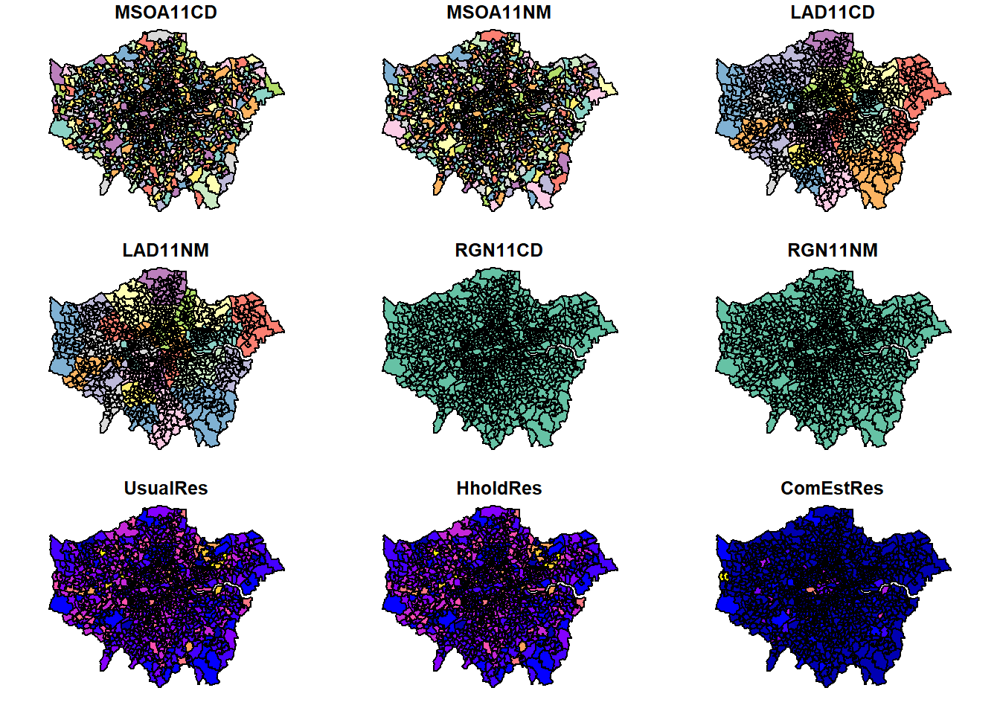
Before we can link our crimes to MSOA, we’ll need to ensure identical coordinate systems, and remove any non-geolocated values we’ll need to erase any missing values (while checking we retain enough data for analysis.)
#count missing values in the longitude column
print("Missing values identified:")[1] "Missing values identified:"sum(is.na(subset_df["Longitude"]))[1] 82Thankfully, we only identify 82 crimes which we need to remove, leaving plenty for analysis.
clean_df <- subset_df[!rowSums(is.na(subset_df["Longitude"])), ]We can now convert our crime data to spacial data, using our longitude and latitude coordinates - this allows us to quickly plot our data, and confirm it looks right.
Warning: plotting the first 9 out of 12 attributes; use max.plot = 12 to plot
all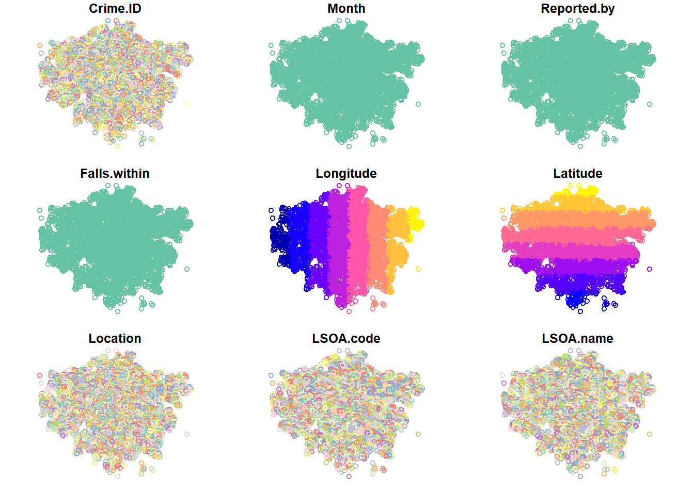
With our data now mapped, we ensure everything is aligned to the appropriate coordinate system, and assign each crime to an MSOA from our data - the data is then aggregated into a monthly MSOA crime count, to which we assign our monthly date.
Warning in CPL_crs_from_input(x): GDAL Message 1: +init=epsg:XXXX syntax is
deprecated. It might return a CRS with a non-EPSG compliant axis order.`summarise()` has grouped output by 'MSOA11CD'. You can override using the
`.groups` argument.| MSOA11CD | Crime.type | count_by_msoa | Month |
|---|---|---|---|
| E02000001 | Burglary | 1 | 2018-01 |
| E02000002 | Burglary | 9 | 2018-01 |
| E02000002 | Robbery | 1 | 2018-01 |
| E02000003 | Burglary | 11 | 2018-01 |
| E02000003 | Robbery | 2 | 2018-01 |
| E02000004 | Burglary | 10 | 2018-01 |
Bringing together all the code so far into a function, we can create an pipeline to generate our crime count per MSOA time series for the entirety of our dataset.
For this project, I haven’t used the Police.uk API (which would have enabled me to automate the downloads and query the data directly) - as such, we have to iterate over our subfolders, ingesting our CSV data and running through our process.
`summarise()` has grouped output by 'MSOA11CD'. You can override using the
`.groups` argument.
`summarise()` has grouped output by 'MSOA11CD'. You can override using the
`.groups` argument.
`summarise()` has grouped output by 'MSOA11CD'. You can override using the
`.groups` argument.
`summarise()` has grouped output by 'MSOA11CD'. You can override using the
`.groups` argument.
`summarise()` has grouped output by 'MSOA11CD'. You can override using the
`.groups` argument.
`summarise()` has grouped output by 'MSOA11CD'. You can override using the
`.groups` argument.
`summarise()` has grouped output by 'MSOA11CD'. You can override using the
`.groups` argument.
`summarise()` has grouped output by 'MSOA11CD'. You can override using the
`.groups` argument.
`summarise()` has grouped output by 'MSOA11CD'. You can override using the
`.groups` argument.
`summarise()` has grouped output by 'MSOA11CD'. You can override using the
`.groups` argument.
`summarise()` has grouped output by 'MSOA11CD'. You can override using the
`.groups` argument.
`summarise()` has grouped output by 'MSOA11CD'. You can override using the
`.groups` argument.
`summarise()` has grouped output by 'MSOA11CD'. You can override using the
`.groups` argument.
`summarise()` has grouped output by 'MSOA11CD'. You can override using the
`.groups` argument.
`summarise()` has grouped output by 'MSOA11CD'. You can override using the
`.groups` argument.
`summarise()` has grouped output by 'MSOA11CD'. You can override using the
`.groups` argument.
`summarise()` has grouped output by 'MSOA11CD'. You can override using the
`.groups` argument.
`summarise()` has grouped output by 'MSOA11CD'. You can override using the
`.groups` argument.
`summarise()` has grouped output by 'MSOA11CD'. You can override using the
`.groups` argument.
`summarise()` has grouped output by 'MSOA11CD'. You can override using the
`.groups` argument.
`summarise()` has grouped output by 'MSOA11CD'. You can override using the
`.groups` argument.
`summarise()` has grouped output by 'MSOA11CD'. You can override using the
`.groups` argument.
`summarise()` has grouped output by 'MSOA11CD'. You can override using the
`.groups` argument.
`summarise()` has grouped output by 'MSOA11CD'. You can override using the
`.groups` argument.
`summarise()` has grouped output by 'MSOA11CD'. You can override using the
`.groups` argument.
`summarise()` has grouped output by 'MSOA11CD'. You can override using the
`.groups` argument.
`summarise()` has grouped output by 'MSOA11CD'. You can override using the
`.groups` argument.
`summarise()` has grouped output by 'MSOA11CD'. You can override using the
`.groups` argument.
`summarise()` has grouped output by 'MSOA11CD'. You can override using the
`.groups` argument.
`summarise()` has grouped output by 'MSOA11CD'. You can override using the
`.groups` argument.
`summarise()` has grouped output by 'MSOA11CD'. You can override using the
`.groups` argument.
`summarise()` has grouped output by 'MSOA11CD'. You can override using the
`.groups` argument.
`summarise()` has grouped output by 'MSOA11CD'. You can override using the
`.groups` argument.
`summarise()` has grouped output by 'MSOA11CD'. You can override using the
`.groups` argument.
`summarise()` has grouped output by 'MSOA11CD'. You can override using the
`.groups` argument.
`summarise()` has grouped output by 'MSOA11CD'. You can override using the
`.groups` argument.| MSOA11CD | Crime.type | count_by_msoa | Month |
|---|---|---|---|
| E02000001 | Burglary | 1 | 2018-01 |
| E02000002 | Burglary | 9 | 2018-01 |
| E02000002 | Robbery | 1 | 2018-01 |
| E02000003 | Burglary | 11 | 2018-01 |
| E02000003 | Robbery | 2 | 2018-01 |
We now have a combined dataframe of 71,848 rows, from January 2018 through December 2020.
#saving file to CSV
#write.csv(empty_df,"msoa_crime_matrix.csv")2. Predict trend by MSOA
Visualisation and Exploration
With our data now cleaned and aggregated, we can focus on the more interesting part - forecasting our “expected” pandemic crime, and examining how much it diverges from our “actual” crime.
empty_df <- read.csv("msoa_crime_matrix.csv")
empty_df <- empty_df[2:70848,2:5]
head(empty_df)| MSOA11CD | Crime.type | count_by_msoa | Month | |
|---|---|---|---|---|
| 2 | E02000001 | Burglary | 1 | 2018-01 |
| 3 | E02000002 | Burglary | 9 | 2018-01 |
| 4 | E02000002 | Robbery | 1 | 2018-01 |
| 5 | E02000003 | Burglary | 11 | 2018-01 |
| 6 | E02000003 | Robbery | 2 | 2018-01 |
| 7 | E02000004 | Burglary | 10 | 2018-01 |
Before going any further, let’s use this to explore and visualise the distribution of robbery and burglary across time and space during our “pre-pandemic” period, in March 2020 - based on London mobility indicators, this is when movement accross London began to be heavily affected, and the disruption was most notable in April
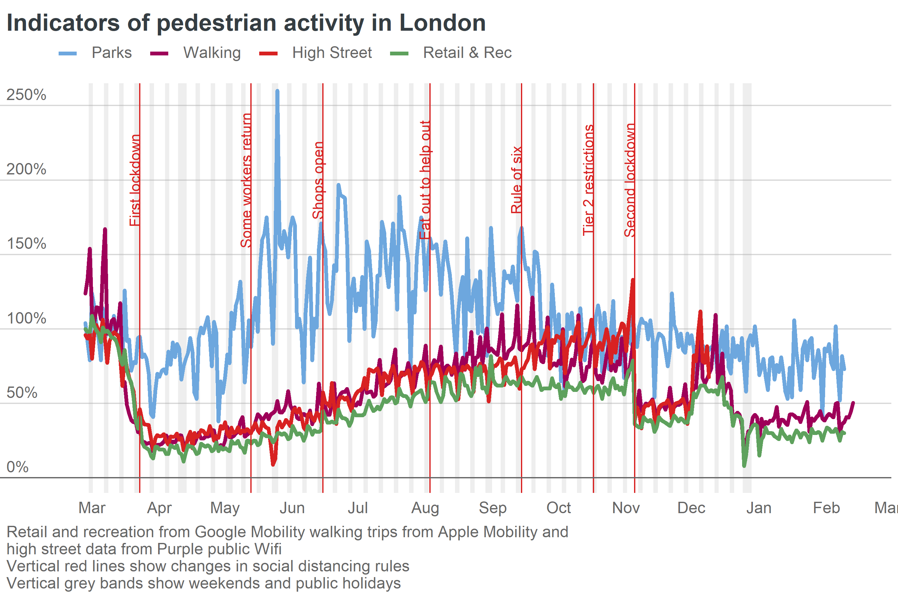
burglary_df<-empty_df
#add a "1" so our month can be converted to a full date
burglary_df$DateString <- paste(burglary_df$Month, "-01", sep="")
#convert to date format
burglary_df$DateClean <- ymd(burglary_df$DateString)
#filter out only burglary prior to the pandemic
burglaryExplore <- filter(burglary_df, DateClean < "2020-03-01" & Crime.type=="Burglary")
head(burglaryExplore)| MSOA11CD | Crime.type | count_by_msoa | Month | DateString | DateClean |
|---|---|---|---|---|---|
| E02000001 | Burglary | 1 | 2018-01 | 2018-01-01 | 2018-01-01 |
| E02000002 | Burglary | 9 | 2018-01 | 2018-01-01 | 2018-01-01 |
| E02000003 | Burglary | 11 | 2018-01 | 2018-01-01 | 2018-01-01 |
| E02000004 | Burglary | 10 | 2018-01 | 2018-01-01 | 2018-01-01 |
| E02000005 | Burglary | 6 | 2018-01 | 2018-01-01 | 2018-01-01 |
| E02000007 | Burglary | 7 | 2018-01 | 2018-01-01 | 2018-01-01 |
Looking at the aggregate counts of burglary across London, a visual observation suggests yearly trends (which we’ll have to consider in our forecast), which sharp peaks during the Winter months and the lowest numbers in summer (when the days are longest).
#group burglary count by months and plot
burglary_by_month <- burglaryExplore %>%
group_by(DateClean) %>%
summarize(total_burglaries = sum(count_by_msoa))
ggplot(burglary_by_month, aes(x=DateClean, y=total_burglaries)) +
geom_line()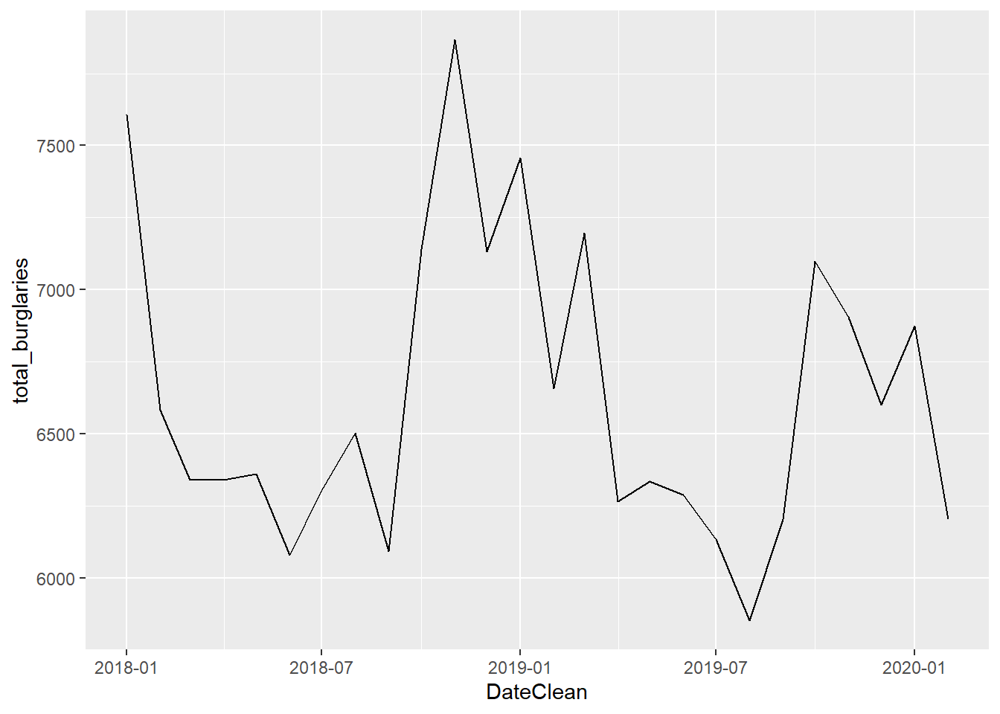
To observe how crime counts are distributed in space, let’s map both counts by MSOA. As previously mentioned, MSOAs are designed to be comparable units, at least from a population perspective - we don’t need to produce per population rates.
burglary_by_msoa <- burglaryExplore %>%
group_by(MSOA11CD) %>%
summarize(total_burglaries = sum(count_by_msoa))
#we join our burglary counts to their geographic msoa
burglary_map <- left_join(lsoa_borders, burglary_by_msoa, by = "MSOA11CD")
#user brewer colour palette https://colorbrewer2.org
pal <- brewer.pal(5,"BuGn")
#create our map, and add the layout options
burglary_map <-tm_shape(burglary_map) +
tm_fill(col = "total_burglaries", title = "Total Burglary Count by MSOA", style="quantile", palette="BuGn") +
tm_layout(legend.outside = TRUE, legend.outside.position = "right")
robbery_df<-empty_df
robbery_df$DateString <- paste(robbery_df$Month, "-01", sep="")
robbery_df$DateClean <- ymd(robbery_df$DateString)
robberyExplore <- filter(robbery_df, DateClean < "2020-03-01" & Crime.type=="Robbery")
robbery_by_msoa <- robberyExplore %>%
group_by(MSOA11CD) %>%
summarize(total_robberies = sum(count_by_msoa))
robbery_map <- left_join(lsoa_borders, robbery_by_msoa, by = "MSOA11CD")
pal <- brewer.pal(5,"BuGn")
robbery_map <-tm_shape(robbery_map) +
tm_fill(col = "total_robberies", title = "Total Robbery Count by MSOA", style="quantile", palette="BuGn") +
tm_layout(legend.outside = TRUE, legend.outside.position = "right")
#arrange the maps together
tmap_arrange(burglary_map, robbery_map, nrow = 2)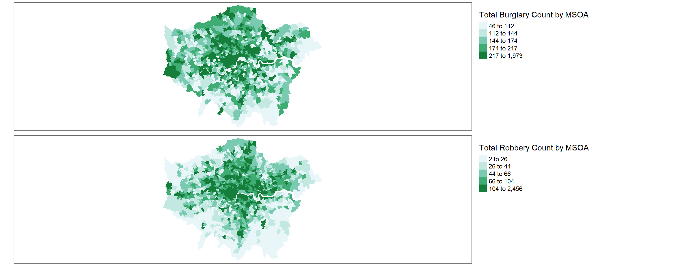
We notice that robbery is noticeably more concentrated in central London, with burglary remaining quite common across the city. That said, there are also obvious spatial patterns here - these crimes are clustered in certain geographies.
Modelling
We can now begin the forecasting process. To design our process, we’ll start by focusing on a single MSOA - the first in our dataset, E02000001, or the City of London.
single_msoa_df <- filter(empty_df, MSOA11CD == "E02000001" & Crime.type=="Burglary")
#we add a 01 to our date to ensure R recognises the date format
single_msoa_df$DateString <- paste(single_msoa_df$Month, "-01")
single_msoa_df$DateClean <- ymd(single_msoa_df$DateString)
single_msoa_df| MSOA11CD | Crime.type | count_by_msoa | Month | DateString | DateClean |
|---|---|---|---|---|---|
| E02000001 | Burglary | 1 | 2018-01 | 2018-01 -01 | 2018-01-01 |
| E02000001 | Burglary | 1 | 2018-02 | 2018-02 -01 | 2018-02-01 |
| E02000001 | Burglary | 2 | 2018-03 | 2018-03 -01 | 2018-03-01 |
| E02000001 | Burglary | 1 | 2018-04 | 2018-04 -01 | 2018-04-01 |
| E02000001 | Burglary | 4 | 2018-05 | 2018-05 -01 | 2018-05-01 |
| E02000001 | Burglary | 0 | 2018-06 | 2018-06 -01 | 2018-06-01 |
| E02000001 | Burglary | 3 | 2018-07 | 2018-07 -01 | 2018-07-01 |
| E02000001 | Burglary | 2 | 2018-08 | 2018-08 -01 | 2018-08-01 |
| E02000001 | Burglary | 1 | 2018-09 | 2018-09 -01 | 2018-09-01 |
| E02000001 | Burglary | 0 | 2018-10 | 2018-10 -01 | 2018-10-01 |
| E02000001 | Burglary | 1 | 2018-11 | 2018-11 -01 | 2018-11-01 |
| E02000001 | Burglary | 0 | 2018-12 | 2018-12 -01 | 2018-12-01 |
| E02000001 | Burglary | 1 | 2019-01 | 2019-01 -01 | 2019-01-01 |
| E02000001 | Burglary | 7 | 2019-02 | 2019-02 -01 | 2019-02-01 |
| E02000001 | Burglary | 1 | 2019-03 | 2019-03 -01 | 2019-03-01 |
| E02000001 | Burglary | 3 | 2019-04 | 2019-04 -01 | 2019-04-01 |
| E02000001 | Burglary | 6 | 2019-05 | 2019-05 -01 | 2019-05-01 |
| E02000001 | Burglary | 6 | 2019-06 | 2019-06 -01 | 2019-06-01 |
| E02000001 | Burglary | 2 | 2019-07 | 2019-07 -01 | 2019-07-01 |
| E02000001 | Burglary | 1 | 2019-08 | 2019-08 -01 | 2019-08-01 |
| E02000001 | Burglary | 2 | 2019-09 | 2019-09 -01 | 2019-09-01 |
| E02000001 | Burglary | 5 | 2019-10 | 2019-10 -01 | 2019-10-01 |
| E02000001 | Burglary | 1 | 2019-11 | 2019-11 -01 | 2019-11-01 |
| E02000001 | Burglary | 2 | 2019-12 | 2019-12 -01 | 2019-12-01 |
| E02000001 | Burglary | 4 | 2020-01 | 2020-01 -01 | 2020-01-01 |
| E02000001 | Burglary | 1 | 2020-02 | 2020-02 -01 | 2020-02-01 |
| E02000001 | Burglary | 0 | 2020-03 | 2020-03 -01 | 2020-03-01 |
| E02000001 | Burglary | 0 | 2020-04 | 2020-04 -01 | 2020-04-01 |
| E02000001 | Burglary | 1 | 2020-05 | 2020-05 -01 | 2020-05-01 |
| E02000001 | Burglary | 1 | 2020-06 | 2020-06 -01 | 2020-06-01 |
| E02000001 | Burglary | 2 | 2020-07 | 2020-07 -01 | 2020-07-01 |
| E02000001 | Burglary | 1 | 2020-08 | 2020-08 -01 | 2020-08-01 |
| E02000001 | Burglary | 1 | 2020-09 | 2020-09 -01 | 2020-09-01 |
| E02000001 | Burglary | 1 | 2020-10 | 2020-10 -01 | 2020-10-01 |
| E02000001 | Burglary | 1 | 2020-11 | 2020-11 -01 | 2020-11-01 |
| E02000001 | Burglary | 2 | 2020-12 | 2020-12 -01 | 2020-12-01 |
From a forecasting/time-series perspective, this is a very small dataset - 36 monthly observations. We will be shrinking this further to only 26 by focusing on data prior to March 2020, when the COVID crime impact is felt. This significantly limits our forecasting options, and will impact accuracy, if we treat each MSOA in isolation - we could explore some sort of Vector Autoregressive Model to limit this, but given that we’re then going to be exploring the error of all our models in aggregation, this isn’t crucial. Our focus is on models that we can accurately deploy without needing to tune each of them individually, and that can capture the seasonal trend, and generate reliable predictions on our limited dataset.
Given these limitations, I’ve opted for the Prophet algorith. While it’s more opaque than a auto-arima or VAR model, it works well with monthly data, and extracting seasonal trends. It also requires very little tuning.
As such, we’ll extract our “training set” prior to March, and start forecasting.
training_set <- filter(single_msoa_df, DateClean < "2020-03-01")
training_df <- tibble(
ds=training_set$DateClean,
y=training_set$count_by_msoa
)
head(training_df)| ds | y |
|---|---|
| 2018-01-01 | 1 |
| 2018-02-01 | 1 |
| 2018-03-01 | 2 |
| 2018-04-01 | 1 |
| 2018-05-01 | 4 |
| 2018-06-01 | 0 |
library(prophet)Loading required package: RcppLoading required package: rlang
Attaching package: 'rlang'The following object is masked from 'package:Metrics':
llThe following objects are masked from 'package:purrr':
%@%, as_function, flatten, flatten_chr, flatten_dbl, flatten_int,
flatten_lgl, flatten_raw, invoke, splicem <- prophet(training_df)Disabling weekly seasonality. Run prophet with weekly.seasonality=TRUE to override this.Disabling daily seasonality. Run prophet with daily.seasonality=TRUE to override this.n.changepoints greater than number of observations. Using 19For now, we’ll forecast on a 6 month horizon - we obviously wouldn’t expect it to be accurate that far into the future.
#prophet generates a future dataframe using our data, for 6 mperiods
future <- make_future_dataframe(m, periods = 6, freq = 'month')
forecast <- predict(m, future)
plot(m, forecast)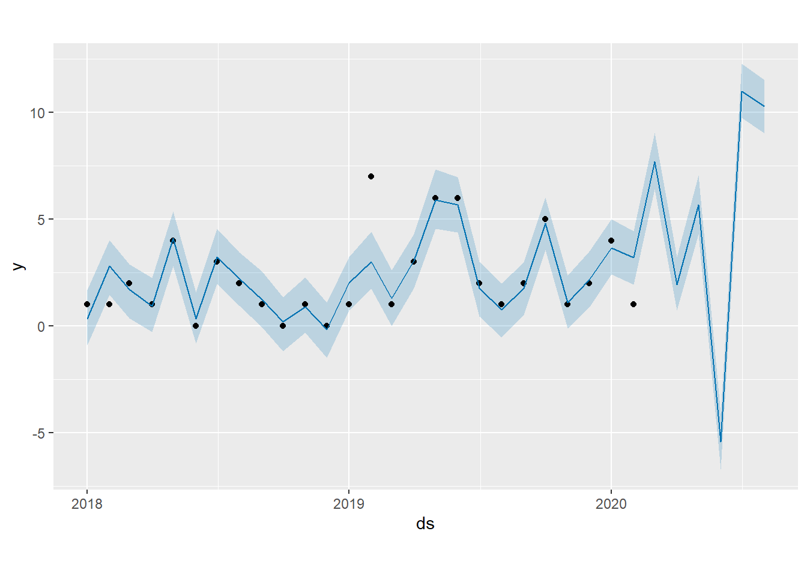
As we can see, the model seems consistent on a short horizon, and gets very wide as it goes further into the future. More importantly however, it has extracted a yearly seasonal compontent - the summer decrease we identified previously - as well as a long term trend.
prophet_plot_components(m, forecast)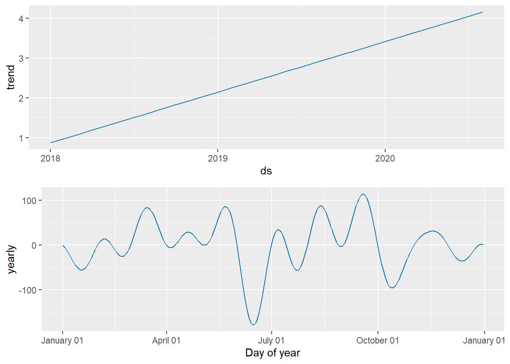
These predictions seem far-fetched, but remember we will be observing a London wide error rate. As such, we must now isolate our “pandemic period” - which we define as April and May 2020 - and compare the predicted crime counts to the actual crime counts to obtain a metric of our “COVID crime shift”, or our error rate.
forecast$Month <- month(forecast$ds)
forecast$Year <- year(forecast$ds)
this_year <- filter(forecast, Year > 2019)
peak_pandemic <- filter(this_year, Month== 4 | Month== 5 )
predictionPivot <- peak_pandemic %>%
group_by(Month) %>%
summarize(predicted_burglary = mean(yhat))
single_msoa_df$MonthNum <- month(single_msoa_df$DateClean)
single_msoa_df$YearNum <- year(single_msoa_df$DateClean)
this_year_actual <- filter(single_msoa_df, YearNum > 2019)
peak_pandemic_actual <- filter(this_year_actual, MonthNum== 4 | MonthNum== 5 )
actual_burglary <- sum(peak_pandemic_actual$count_by_msoa)
pred_burglary <- sum(predictionPivot$predicted_burglary)
error <- actual_burglary - pred_burglary
percentage_error <- error / pred_burglary
print("Burglary Count")[1] "Burglary Count"print(actual_burglary)[1] 1print("Predicted")[1] "Predicted"print(pred_burglary)[1] 7.625019print("Actual Error")[1] "Actual Error"print(error)[1] -6.625019print("Percentage Error")[1] "Percentage Error"print(percentage_error)[1] -0.8688528In this MSOA, our model predicted nearly 8 burglaries would occur in these two months, based on pre-pandemic trends. In reality, 1 took place - a large error rate, suggesting a strong “COVID effect”.
This process can now be replicated for every MSOA in London, to obtain this metric for each MSOA.
length(unique(empty_df$MSOA11CD))[1] 984## NULLhead(msoa_error_tibble)| MSOA11CD | burglaryActual | burglaryPredicted | burglaryError | burglaryPercentError | robberyActual | robberyPredicted | robberyError | robberyPercentError |
|---|---|---|---|---|---|---|---|---|
| E02000001 | 1 | 7.62501853994038 | -6.62501853994038 | -0.868852777896614 | 1 | -1.97666206600358 | 2.97666206600358 | -1.50590336972561 |
| E02000002 | 8 | -9.23326713435216 | 17.2332671343522 | -1.86643220472157 | 0 | 1.12957561845153 | -1.12957561845153 | -1 |
| E02000003 | 11 | 12.3480006370534 | -1.34800063705343 | -0.109167522473914 | 10 | 6.9224283913514 | 3.0775716086486 | 0.444579768061392 |
| E02000004 | 2 | -4.71960263280976 | 6.71960263280976 | -1.42376448942892 | 0 | -1.27129225183737 | 1.27129225183737 | -1 |
| E02000005 | 4 | 4.58490182624086 | -0.584901826240862 | -0.127571286890655 | 1 | 9.21402738381341 | -8.21402738381341 | -0.89146982547971 |
Our process has completed: we have a “COVID shift” measure for all of London.
3. Measuring Local COVID Crime Shifts
We now need to use our forecasts to measure the “error” - this should provide an indication of the “COVID Crime Shift”, or how much the actual crime diverted from the previous forecasts.
I explored various avenues for this: the ideal solution would be a relative rate of the error, as MSOAs with large crime numbers will likely generate large errors, and so a rate would be ideal, though this is complicated by our erratic prediction and mix of positive and negative numbers.
Our final solution has explored two options: - the absolute error number - the relative error once the crime and predictions have been transformed (by adding 50)
\[ actual_{k} = actual + 50 \]
\[ predicted_{k} = predicted + 50 \]
\[ RPD = \frac{(actual_{k} - predicted_{k})} {(actual_{k} + predicted_{k})/2} \]
We visualise and describe these statistics first to ensure they appear sensible.
msoa_error_tibble <- read_csv("msoa_error_table2.csv")Rows: 980 Columns: 9
── Column specification ────────────────────────────────────────────────────────
Delimiter: ","
chr (1): MSOA11CD
dbl (8): burglaryActual, burglaryPredicted, burglaryError, burglaryPercentEr...
ℹ Use `spec()` to retrieve the full column specification for this data.
ℹ Specify the column types or set `show_col_types = FALSE` to quiet this message.msoa_error_tibble[,2:9] <- lapply(msoa_error_tibble[,2:9], as.numeric)
msoa_error_tibble <- msoa_error_tibble[2:980, ]
msoa_error_tibble <- left_join(msoa_error_tibble, robbery_by_msoa, by = "MSOA11CD")
msoa_error_tibble <- left_join(msoa_error_tibble, burglary_by_msoa, by = "MSOA11CD")msoa_error_tibble$RPDBurglary <- (msoa_error_tibble$burglaryActual - msoa_error_tibble$burglaryPredicted)/((msoa_error_tibble$burglaryPredicted + msoa_error_tibble$burglaryActual)/2)
msoa_error_tibble$RPDRobbery <- (msoa_error_tibble$robberyActual - msoa_error_tibble$robberyPredicted)/((msoa_error_tibble$robberyPredicted + msoa_error_tibble$robberyActual)/2)
msoa_error_tibble$robberyActualShifted <- msoa_error_tibble$robberyActual + 50
msoa_error_tibble$robberyPredictedShifted <- msoa_error_tibble$robberyPredicted + 50
msoa_error_tibble$RPDRobberyShifted <- (msoa_error_tibble$robberyActualShifted - msoa_error_tibble$robberyPredictedShifted)/((msoa_error_tibble$robberyPredictedShifted + msoa_error_tibble$robberyActualShifted)/2)
msoa_error_tibble$burglaryActualShifted <- msoa_error_tibble$burglaryActual + 50
msoa_error_tibble$burglaryPredictedShifted <- msoa_error_tibble$burglaryPredicted + 50
msoa_error_tibble$RPDburglaryShifted <- (msoa_error_tibble$burglaryActualShifted - msoa_error_tibble$burglaryPredictedShifted)/((msoa_error_tibble$burglaryPredictedShifted + msoa_error_tibble$burglaryActualShifted)/2)print("Burglary Error")[1] "Burglary Error"summary(msoa_error_tibble$burglaryError) Min. 1st Qu. Median Mean 3rd Qu. Max.
-97.191 -12.870 -5.271 -6.090 2.111 48.727 print("Burglary Relative Error")[1] "Burglary Relative Error"summary(msoa_error_tibble$RPDburglaryShifted) Min. 1st Qu. Median Mean 3rd Qu. Max.
-0.81266 -0.20689 -0.08826 -0.07976 0.03612 1.29467 print("Robbery Error")[1] "Robbery Error"summary(msoa_error_tibble$robberyError) Min. 1st Qu. Median Mean 3rd Qu. Max.
-309.618 -6.577 -2.150 -3.840 2.205 25.564 print("Robbery Relative Error")[1] "Robbery Relative Error"summary(msoa_error_tibble$RPDRobberyShifted) Min. 1st Qu. Median Mean 3rd Qu. Max.
-1.45491 -0.11808 -0.04081 -0.04876 0.04309 0.62020 As we can see, the average London MSOA experienced a negative COVID crime shift for both burglary and robbery, but this is far from equally distributed - at the extremes, some areas actually see large increases on our predicted values.
burg_hist <- ggplot(msoa_error_tibble, aes(x=burglaryError)) + geom_histogram()
rob_hist <-ggplot(msoa_error_tibble, aes(x=robberyError)) + geom_histogram()
burg_r_hist <- ggplot(msoa_error_tibble, aes(x=RPDburglaryShifted)) + geom_histogram()
rob_r_hist <- ggplot(msoa_error_tibble, aes(x=RPDRobberyShifted)) + geom_histogram()
scatter <- ggplot(msoa_error_tibble, aes(x = RPDRobberyShifted, y = RPDburglaryShifted)) +
geom_point()
r_scatter <- ggplot(msoa_error_tibble, aes(x = robberyError, y = burglaryError)) +
geom_point()
ggarrange(rob_hist, burg_hist, rob_r_hist, burg_r_hist,scatter, r_scatter, ncol=2, nrow=3 )`stat_bin()` using `bins = 30`. Pick better value with `binwidth`.
`stat_bin()` using `bins = 30`. Pick better value with `binwidth`.
`stat_bin()` using `bins = 30`. Pick better value with `binwidth`.
`stat_bin()` using `bins = 30`. Pick better value with `binwidth`.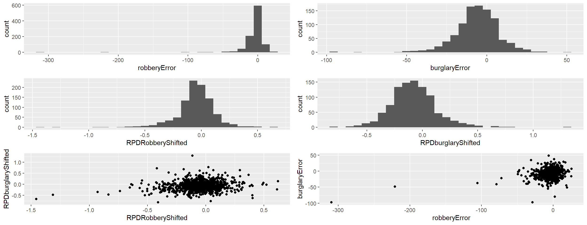
Our shifted relative error rate seems to function as intended: while there are still outliers, they are more concentrated than they are for the pure error term, and the overall distribution is more focused, while still indicating the direction and relative strength of our COVID effect.
Let’s map this effect visually, and see if any particular areas stand out.
#re-ingest our geographic MSOA borders
msoa_borders <- st_read("msoa_borders/MSOA_2011_London_gen_MHW.tab", crs=27700)Reading layer `MSOA_2011_London_gen_MHW' from data source
`D:\Dropbox\Data Projects\Covid_crime_shift\msoa_borders\MSOA_2011_London_gen_MHW.tab'
using driver `MapInfo File'
Simple feature collection with 983 features and 12 fields
Geometry type: MULTIPOLYGON
Dimension: XY
Bounding box: xmin: 503574.2 ymin: 155850.8 xmax: 561956.7 ymax: 200933.6
Projected CRS: OSGB 1936 / British National Gridgeographic_error_map <- left_join(msoa_borders, msoa_error_tibble, by = "MSOA11CD")
burg_map <- tm_shape(geographic_error_map) +
tm_fill(col = "robberyError", title = "Robbery Error", palette="-PuOr")+
tm_layout(legend.outside = TRUE, legend.outside.position = "right")
rob_map <-tm_shape(geographic_error_map) +
tm_fill(col = "burglaryError", title = "Burglary Error", palette="-PuOr")+
tm_layout(legend.outside = TRUE, legend.outside.position = "right")
burg_map_rate <- tm_shape(geographic_error_map) +
tm_fill(col = "RPDRobberyShifted", title = "Robbery Error Relative", palette="-PuOr")+
tm_layout(legend.outside = TRUE, legend.outside.position = "right")
rob_map_rate <-tm_shape(geographic_error_map) +
tm_fill(col = "RPDburglaryShifted", title = "Burglary Error Relative", palette="-PuOr")+
tm_layout(legend.outside = TRUE, legend.outside.position = "right")
tmap_arrange(burg_map, rob_map, burg_map_rate, rob_map_rate , nrow = 2, ncol=2)Variable(s) "robberyError" contains positive and negative values, so midpoint is set to 0. Set midpoint = NA to show the full spectrum of the color palette.Variable(s) "burglaryError" contains positive and negative values, so midpoint is set to 0. Set midpoint = NA to show the full spectrum of the color palette.Variable(s) "RPDRobberyShifted" contains positive and negative values, so midpoint is set to 0. Set midpoint = NA to show the full spectrum of the color palette.Variable(s) "RPDburglaryShifted" contains positive and negative values, so midpoint is set to 0. Set midpoint = NA to show the full spectrum of the color palette.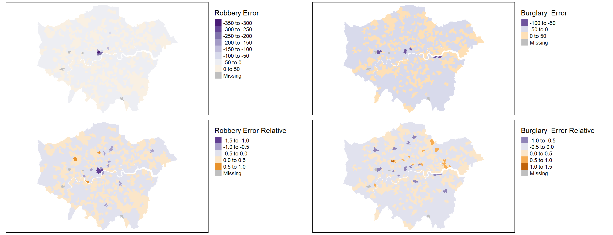
It’s hard to identify any obvious effect visually, but we do notice that while central London sees some very strong reductions, it also sees some increases. Conversely, the outskirts of London (notably to the south and West) are a near continuous area of large decreases. The effect does vary by offence type, but the pattern seen in South and West London appears broadly consistent.
Identifying Correlates and Modelling
We’ve identified that the COVID crime effect was felt unequally accross London, and varies by offence type. To finalise our project, we will be linking our data to demographic data provided by MOPAC, and aiming to use it to identify correlates to our “covid shift”, and hopefully build models disentangling the effect.
library(readxl)
#ingest ATLAS
msoa_atlas <- read_excel("msoa_atlas/msoa-data.xls")New names:
• `House Prices Sales 2011` -> `House Prices Sales 2011...129`
• `House Prices Sales 2011` -> `House Prices Sales 2011...130`#join by MSOA
geographic_msoa_matrix <- left_join(geographic_error_map, msoa_atlas, by = "MSOA11CD")
#convert to tibble
msoa_matrix_tbl <- as_tibble(geographic_msoa_matrix)
write_csv(msoa_matrix_tbl, "msoa_matrix.csv")
#select only numeric data
msoa_matrix_numeric <-dplyr::select_if(msoa_matrix_tbl, is.numeric)
head(msoa_matrix_numeric)| UsualRes | HholdRes | ComEstRes | PopDen | Hholds | AvHholdSz | burglaryActual | burglaryPredicted | burglaryError | burglaryPercentError | robberyActual | robberyPredicted | robberyError | robberyPercentError | total_robberies | total_burglaries | RPDBurglary | RPDRobbery | robberyActualShifted | robberyPredictedShifted | RPDRobberyShifted | burglaryActualShifted | burglaryPredictedShifted | RPDburglaryShifted | Age Structure (2011 Census) All Ages | Age Structure (2011 Census) 0-15 | Age Structure (2011 Census) 16-29 | Age Structure (2011 Census) 30-44 | Age Structure (2011 Census) 45-64 | Age Structure (2011 Census) 65+ | Age Structure (2011 Census) Working-age | Mid-year Estimate totals All Ages 2002 | Mid-year Estimate totals All Ages 2003 | Mid-year Estimate totals All Ages 2004 | Mid-year Estimate totals All Ages 2005 | Mid-year Estimate totals All Ages 2006 | Mid-year Estimate totals All Ages 2007 | Mid-year Estimate totals All Ages 2008 | Mid-year Estimate totals All Ages 2009 | Mid-year Estimate totals All Ages 2010 | Mid-year Estimate totals All Ages 2011 | Mid-year Estimate totals All Ages 2012 | Mid-year Estimates 2012, by age % 0 to 14 | Mid-year Estimates 2012, by age % 15-64 | Mid-year Estimates 2012, by age % 65+ | Mid-year Estimates 2012, by age 0-4 | Mid-year Estimates 2012, by age 5-9 | Mid-year Estimates 2012, by age 10-14 | Mid-year Estimates 2012, by age 15-19 | Mid-year Estimates 2012, by age 20-24 | Mid-year Estimates 2012, by age 25-29 | Mid-year Estimates 2012, by age 30-34 | Mid-year Estimates 2012, by age 35-39 | Mid-year Estimates 2012, by age 40-44 | Mid-year Estimates 2012, by age 45-49 | Mid-year Estimates 2012, by age 50-54 | Mid-year Estimates 2012, by age 55-59 | Mid-year Estimates 2012, by age 60-64 | Mid-year Estimates 2012, by age 65-69 | Mid-year Estimates 2012, by age 70-74 | Mid-year Estimates 2012, by age 75-79 | Mid-year Estimates 2012, by age 80-84 | Mid-year Estimates 2012, by age 85-89 | Mid-year Estimates 2012, by age 90+ | Households (2011) All Households | Household Composition (2011) Numbers Couple household with dependent children | Household Composition (2011) Numbers Couple household without dependent children | Household Composition (2011) Numbers Lone parent household | Household Composition (2011) Numbers One person household | Household Composition (2011) Numbers Other household Types | Household Composition (2011) Percentages Couple household with dependent children | Household Composition (2011) Percentages Couple household without dependent children | Household Composition (2011) Percentages Lone parent household | Household Composition (2011) Percentages One person household | Household Composition (2011) Percentages Other household Types | Ethnic Group (2011 Census) White | Ethnic Group (2011 Census) Mixed/multiple ethnic groups | Ethnic Group (2011 Census) Asian/Asian British | Ethnic Group (2011 Census) Black/African/Caribbean/Black British | Ethnic Group (2011 Census) Other ethnic group | Ethnic Group (2011 Census) BAME | Ethnic Group (2011 Census) White (%) | Ethnic Group (2011 Census) Mixed/multiple ethnic groups (%) | Ethnic Group (2011 Census) Asian/Asian British (%) | Ethnic Group (2011 Census) Black/African/Caribbean/Black British (%) | Ethnic Group (2011 Census) Other ethnic group (%) | Ethnic Group (2011 Census) BAME (%) | Country of Birth (2011) United Kingdom | Country of Birth (2011) Not United Kingdom | Country of Birth (2011) United Kingdom (%) | Country of Birth (2011) Not United Kingdom (%) | Household Language (2011) At least one person aged 16 and over in household has English as a main language | Household Language (2011) No people in household have English as a main language | Household Language (2011) % of people aged 16 and over in household have English as a main language | Household Language (2011) % of households where no people in household have English as a main language | Religion (2011) Christian | Religion (2011) Buddhist | Religion (2011) Hindu | Religion (2011) Jewish | Religion (2011) Muslim | Religion (2011) Sikh | Religion (2011) Other religion | Religion (2011) No religion | Religion (2011) Religion not stated | Religion (2011) Christian (%) | Religion (2011) Buddhist (%) | Religion (2011) Hindu (%) | Religion (2011) Jewish (%) | Religion (2011) Muslim (%) | Religion (2011) Sikh (%) | Religion (2011) Other religion (%) | Religion (2011) No religion (%) | Religion (2011) Religion not stated (%) | Tenure (2011) Owned: Owned outright | Tenure (2011) Owned: Owned with a mortgage or loan | Tenure (2011) Social rented | Tenure (2011) Private rented | Tenure (2011) Owned: Owned outright (%) | Tenure (2011) Owned: Owned with a mortgage or loan (%) | Tenure (2011) Social rented (%) | Tenure (2011) Private rented (%) | Dwelling type (2011) Household spaces with at least one usual resident | Dwelling type (2011) Household spaces with no usual residents | Dwelling type (2011) Whole house or bungalow: Detached | Dwelling type (2011) Whole house or bungalow: Semi-detached | Dwelling type (2011) Whole house or bungalow: Terraced (including end-terrace) | Dwelling type (2011) Flat, maisonette or apartment | Dwelling type (2011) Household spaces with at least one usual resident (%) | Dwelling type (2011) Household spaces with no usual residents (%) | Dwelling type (2011) Whole house or bungalow: Detached (%) | Dwelling type (2011) Whole house or bungalow: Semi-detached (%) | Dwelling type (2011) Whole house or bungalow: Terraced (including end-terrace) (%) | Dwelling type (2011) Flat, maisonette or apartment (%) | Land Area Hectares | Population Density Persons per hectare (2012) | House Prices Median House Price (£) 2005 | House Prices Median House Price (£) 2006 | House Prices Median House Price (£) 2007 | House Prices Median House Price (£) 2008 | House Prices Median House Price (£) 2009 | House Prices Median House Price (£) 2010 | House Prices Median House Price (£) 2011 | House Prices Median House Price (£) 2012 | House Prices Median House Price (£) 2013 (p) | House Prices Sales 2005 | House Prices Sales 2006 | House Prices Sales 2007 | House Prices Sales 2008 | House Prices Sales 2009 | House Prices Sales 2010 | House Prices Sales 2011…129 | House Prices Sales 2011…130 | House Prices Sales 2013(p) | Qualifications (2011 Census) No qualifications | Qualifications (2011 Census) Highest level of qualification: Level 1 qualifications | Qualifications (2011 Census) Highest level of qualification: Level 2 qualifications | Qualifications (2011 Census) Highest level of qualification: Apprenticeship | Qualifications (2011 Census) Highest level of qualification: Level 3 qualifications | Qualifications (2011 Census) Highest level of qualification: Level 4 qualifications and above | Qualifications (2011 Census) Highest level of qualification: Other qualifications | Qualifications (2011 Census) Schoolchildren and full-time students: Age 18 and over | Economic Activity (2011 Census) Economically active: Total | Economic Activity (2011 Census) Economically active: Unemployed | Economic Activity (2011 Census) Economically inactive: Total | Economic Activity (2011 Census) Economically active % | Economic Activity (2011 Census) Unemployment Rate | Economic Activity (2011 Census) Economically inactive % | Adults in Employment (2011 Census) No adults in employment in household: With dependent children | Adults in Employment (2011 Census) % of households with no adults in employment: With dependent children | Household Income Estimates (2011/12) Total Mean Annual Household Income (£) | Household Income Estimates (2011/12) Total Median Annual Household Income (£) | Income Deprivation (2010) % living in income deprived households reliant on means tested benefit | Income Deprivation (2010) % of people aged over 60 who live in pension credit households | Lone Parents (2011 Census) All lone parent housholds with dependent children | Lone Parents (2011 Census) Lone parents not in employment | Lone Parents (2011 Census) Lone parent not in employment % | Central Heating (2011 Census) Households with central heating (%) | Health (2011 Census) Day-to-day activities limited a lot | Health (2011 Census) Day-to-day activities limited a little | Health (2011 Census) Day-to-day activities not limited | Health (2011 Census) Day-to-day activities limited a lot (%) | Health (2011 Census) Day-to-day activities limited a little (%) | Health (2011 Census) Day-to-day activities not limited (%) | Health (2011 Census) Very good health | Health (2011 Census) Good health | Health (2011 Census) Fair health | Health (2011 Census) Bad health | Health (2011 Census) Very bad health | Health (2011 Census) Very good health (%) | Health (2011 Census) Good health (%) | Health (2011 Census) Fair health (%) | Health (2011 Census) Bad health (%) | Health (2011 Census) Very bad health (%) | Low Birth Weight Births (2007-2011) Low Birth Weight Births (%) | Low Birth Weight Births (2007-2011) LCL - Lower confidence limit | Low Birth Weight Births (2007-2011) UCL - Upper confidence limit | Obesity % of measured children in Year 6 who were classified as obese, 2009/10-2011/12 | Obesity Percentage of the population aged 16+ with a BMI of 30+, modelled estimate, 2006-2008 | Incidence of Cancer All | Incidence of Cancer Breast Cancer | Incidence of Cancer Colorectal Cancer | Incidence of Cancer Lung Cancer | Incidence of Cancer Prostate Cancer | Life Expectancy Males | Life Expectancy Females | Car or van availability (2011 Census) No cars or vans in household | Car or van availability (2011 Census) 1 car or van in household | Car or van availability (2011 Census) 2 cars or vans in household | Car or van availability (2011 Census) 3 cars or vans in household | Car or van availability (2011 Census) 4 or more cars or vans in household | Car or van availability (2011 Census) Sum of all cars or vans in the area | Car or van availability (2011 Census) No cars or vans in household (%) | Car or van availability (2011 Census) 1 car or van in household (%) | Car or van availability (2011 Census) 2 cars or vans in household (%) | Car or van availability (2011 Census) 3 cars or vans in household (%) | Car or van availability (2011 Census) 4 or more cars or vans in household (%) | Car or van availability (2011 Census) Cars per household | Road Casualties 2010 Fatal | Road Casualties 2010 Serious | Road Casualties 2010 Slight | Road Casualties 2010 2010 Total | Road Casualties 2011 Fatal | Road Casualties 2011 Serious | Road Casualties 2011 Slight | Road Casualties 2011 2011 Total | Road Casualties 2012 Fatal | Road Casualties 2012 Serious | Road Casualties 2012 Slight | Road Casualties 2012 2012 Total |
|---|---|---|---|---|---|---|---|---|---|---|---|---|---|---|---|---|---|---|---|---|---|---|---|---|---|---|---|---|---|---|---|---|---|---|---|---|---|---|---|---|---|---|---|---|---|---|---|---|---|---|---|---|---|---|---|---|---|---|---|---|---|---|---|---|---|---|---|---|---|---|---|---|---|---|---|---|---|---|---|---|---|---|---|---|---|---|---|---|---|---|---|---|---|---|---|---|---|---|---|---|---|---|---|---|---|---|---|---|---|---|---|---|---|---|---|---|---|---|---|---|---|---|---|---|---|---|---|---|---|---|---|---|---|---|---|---|---|---|---|---|---|---|---|---|---|---|---|---|---|---|---|---|---|---|---|---|---|---|---|---|---|---|---|---|---|---|---|---|---|---|---|---|---|---|---|---|---|---|---|---|---|---|---|---|---|---|---|---|---|---|---|---|---|---|---|---|---|---|---|---|---|---|---|---|---|---|---|---|---|---|---|---|---|---|---|---|---|---|---|---|---|---|---|---|---|---|---|---|
| 7375 | 7187 | 188 | 25.5 | 4385 | 1.6 | 1 | 7.625019 | -6.6250185 | -0.8688528 | 1 | -1.976662 | 2.976662 | -1.5059034 | 53 | 58 | -1.5362329 | -6.0955833 | 51 | 48.02334 | 0.0601204 | 51 | 57.62502 | -0.1219796 | 7375 | 620 | 1665 | 2045 | 2010 | 1035 | 5720 | 7280 | 7115 | 7118 | 7131 | 7254 | 7607 | 7429 | 7472 | 7338 | 7412 | 7604 | 8.771699 | 76.68332 | 14.54498 | 297 | 205 | 165 | 231 | 495 | 949 | 826 | 622 | 663 | 598 | 504 | 470 | 473 | 363 | 263 | 192 | 155 | 86 | 47 | 4385 | 306 | 927 | 153 | 2472 | 527 | 6.978335 | 21.14025 | 3.489168 | 56.37400 | 12.01824 | 5799 | 289 | 940 | 193 | 154 | 1576 | 78.63051 | 3.918644 | 12.745763 | 2.616949 | 2.0881356 | 21.36949 | 4670 | 2705 | 63.32203 | 36.67797 | 3825 | 560 | 87.22919 | 12.770810 | 3344 | 92 | 145 | 166 | 409 | 18 | 28 | 2522 | 651 | 45.3 | 1.2 | 2.0 | 2.3 | 5.5 | 0.2 | 0.4 | 34.2 | 8.8 | 1093 | 762 | 725 | 1573 | 24.9 | 17.4 | 16.5 | 35.9 | 4385 | 1145 | 22 | 12 | 80 | 5416 | 79.3 | 20.7 | 0.4 | 0.2 | 1.4 | 98.0 | 289.78 | 26.24060 | 310000 | 341000 | 412500 | 365000.0 | 410000 | 450000 | 465000 | 485000 | 595000 | 303 | 295 | 268 | 141 | 157 | 235 | 256 | 195 | 353 | 454 | 291 | 445 | 47 | 484 | 4618 | 416 | 422 | 4972 | 187 | 1335 | 78.83304 | 3.761062 | 21.16696 | 38 | 0.9 | 59728.48 | 46788.30 | 5.2 | 9.9 | 91 | 22 | 24.2 | 95.7 | 328 | 520 | 6527 | 4.447458 | 7.050847 | 88.50169 | 4112 | 2374 | 643 | 190 | 56 | 55.75593 | 32.18983 | 8.718644 | 2.576271 | 0.759322 | 4.2 | 2.5 | 7.1 | NA | 13.7 | 76.8 | 90.9 | 83.9 | 57.1 | 80.2 | 83.6 | 88.4 | 3043 | 1100 | 173 | 51 | 18 | 1692 | 69.4 | 25.1 | 3.9 | 1.2 | 0.4 | 0.3858609 | 1 | 39 | 334 | 374 | 0 | 46 | 359 | 405 | 2 | 51 | 361 | 414 |
| 6775 | 6724 | 51 | 31.3 | 2713 | 2.5 | 8 | -9.233267 | 17.2332671 | -1.8664322 | 0 | 1.129576 | -1.129576 | -1.0000000 | 53 | 136 | -27.9473386 | -2.0000000 | 50 | 51.12958 | -0.0223392 | 58 | 40.76673 | 0.3489691 | 6775 | 1751 | 1277 | 1388 | 1258 | 1101 | 3923 | 6333 | 6312 | 6329 | 6341 | 6330 | 6323 | 6369 | 6570 | 6636 | 6783 | 6853 | 25.113089 | 58.73340 | 16.15351 | 652 | 607 | 462 | 458 | 399 | 468 | 466 | 466 | 461 | 450 | 347 | 254 | 256 | 254 | 206 | 215 | 201 | 137 | 94 | 2713 | 491 | 366 | 597 | 814 | 445 | 18.098046 | 13.49060 | 22.005160 | 30.00369 | 16.40251 | 4403 | 330 | 820 | 1133 | 89 | 2372 | 64.98893 | 4.870849 | 12.103321 | 16.723247 | 1.3136531 | 35.01107 | 5159 | 1616 | 76.14760 | 23.85240 | 2459 | 254 | 90.63767 | 9.362329 | 3975 | 19 | 174 | 27 | 591 | 122 | 16 | 1417 | 434 | 58.7 | 0.3 | 2.6 | 0.4 | 8.7 | 1.8 | 0.2 | 20.9 | 6.4 | 596 | 663 | 1133 | 269 | 22.0 | 24.4 | 41.8 | 9.9 | 2713 | 82 | 99 | 744 | 865 | 1087 | 97.1 | 2.9 | 3.5 | 26.6 | 30.9 | 38.9 | 216.15 | 31.70483 | 168500 | 180000 | 187500 | 197500.0 | 190000 | 173000 | 185000 | 182250 | 190000 | 81 | 100 | 100 | 68 | 45 | 61 | 51 | 42 | 61 | 1623 | 789 | 706 | 118 | 479 | 914 | 395 | 272 | 2847 | 335 | 1513 | 65.29817 | 11.766772 | 34.70183 | 319 | 11.8 | 31788.19 | 27058.70 | 31.0 | 27.5 | 445 | 249 | 56.0 | 97.5 | 707 | 678 | 5390 | 10.435424 | 10.007380 | 79.55720 | 2933 | 2288 | 1059 | 389 | 106 | 43.29151 | 33.77122 | 15.630996 | 5.741697 | 1.564576 | 10.6 | 8.4 | 13.3 | 23.6 | 29.8 | 100.7 | 93.3 | 82.5 | 97.2 | 107.6 | 78.0 | 80.1 | 1020 | 1186 | 424 | 66 | 17 | 2305 | 37.6 | 43.7 | 15.6 | 2.4 | 0.6 | 0.8496130 | 0 | 0 | 18 | 18 | 0 | 2 | 16 | 18 | 0 | 1 | 15 | 16 |
| 10045 | 10033 | 12 | 46.9 | 3834 | 2.6 | 11 | 12.348001 | -1.3480006 | -0.1091675 | 10 | 6.922428 | 3.077572 | 0.4445798 | 124 | 239 | -0.1154703 | 0.3637269 | 60 | 56.92243 | 0.0526430 | 61 | 62.34800 | -0.0218569 | 10045 | 2247 | 1959 | 2300 | 2259 | 1280 | 6518 | 9236 | 9252 | 9155 | 9072 | 9144 | 9227 | 9564 | 9914 | 10042 | 10088 | 10218 | 21.442552 | 65.81523 | 12.74222 | 849 | 739 | 603 | 615 | 686 | 804 | 818 | 743 | 770 | 713 | 624 | 526 | 426 | 372 | 277 | 258 | 198 | 124 | 73 | 3834 | 776 | 730 | 589 | 1039 | 700 | 20.239958 | 19.04017 | 15.362546 | 27.09963 | 18.25769 | 5486 | 433 | 2284 | 1618 | 224 | 4559 | 54.61424 | 4.310602 | 22.737680 | 16.107516 | 2.2299652 | 45.38576 | 7193 | 2852 | 71.60777 | 28.39223 | 3431 | 403 | 89.48878 | 10.511215 | 5475 | 46 | 476 | 42 | 1351 | 430 | 34 | 1514 | 677 | 54.5 | 0.5 | 4.7 | 0.4 | 13.4 | 4.3 | 0.3 | 15.1 | 6.7 | 1028 | 1473 | 446 | 830 | 26.8 | 38.4 | 11.6 | 21.6 | 3834 | 110 | 161 | 936 | 1591 | 1256 | 97.2 | 2.8 | 4.1 | 23.7 | 40.3 | 31.8 | 214.15 | 47.71422 | 185000 | 197750 | 220000 | 225000.0 | 188500 | 215000 | 200000 | 205500 | 237000 | 203 | 232 | 295 | 100 | 80 | 97 | 89 | 114 | 98 | 1778 | 1210 | 1236 | 169 | 847 | 1829 | 729 | 442 | 5038 | 459 | 2111 | 70.47139 | 9.110758 | 29.52861 | 268 | 7.0 | 43356.93 | 36834.53 | 18.9 | 21.2 | 408 | 199 | 48.8 | 96.5 | 792 | 810 | 8443 | 7.884520 | 8.063713 | 84.05177 | 4566 | 3633 | 1325 | 406 | 115 | 45.45545 | 36.16725 | 13.190642 | 4.041812 | 1.144848 | 7.8 | 6.1 | 9.9 | 25.5 | 28.3 | 91.4 | 107.3 | 124.6 | 105.5 | 82.9 | 80.2 | 85.6 | 1196 | 1753 | 691 | 155 | 39 | 3766 | 31.2 | 45.7 | 18.0 | 4.0 | 1.0 | 0.9822640 | 0 | 3 | 34 | 37 | 1 | 4 | 40 | 45 | 0 | 3 | 47 | 50 |
| 6182 | 5937 | 245 | 24.8 | 2318 | 2.6 | 2 | -4.719603 | 6.7196026 | -1.4237645 | 0 | -1.271292 | 1.271292 | -1.0000000 | 30 | 81 | -4.9416062 | -2.0000000 | 50 | 48.72871 | 0.0257532 | 52 | 45.28040 | 0.1381492 | 6182 | 1196 | 1277 | 1154 | 1543 | 1012 | 3974 | 6208 | 6159 | 6163 | 6152 | 5997 | 6005 | 6084 | 6268 | 6237 | 6185 | 6308 | 18.246671 | 65.82118 | 15.93215 | 409 | 364 | 378 | 516 | 472 | 435 | 363 | 399 | 388 | 463 | 459 | 354 | 303 | 226 | 238 | 194 | 172 | 106 | 69 | 2318 | 508 | 524 | 322 | 609 | 355 | 21.915444 | 22.60569 | 13.891286 | 26.27265 | 15.31493 | 5006 | 186 | 313 | 649 | 28 | 1176 | 80.97703 | 3.008735 | 5.063086 | 10.498221 | 0.4529279 | 19.02297 | 5292 | 890 | 85.60336 | 14.39664 | 2214 | 104 | 95.51337 | 4.486626 | 4070 | 21 | 34 | 23 | 234 | 10 | 18 | 1373 | 399 | 65.8 | 0.3 | 0.5 | 0.4 | 3.8 | 0.2 | 0.3 | 22.2 | 6.5 | 718 | 969 | 371 | 228 | 31.0 | 41.8 | 16.0 | 9.8 | 2318 | 45 | 92 | 858 | 1094 | 314 | 98.1 | 1.9 | 3.9 | 36.3 | 46.3 | 13.2 | 249.28 | 25.30488 | 181000 | 182000 | 212000 | 208997.5 | 182000 | 192000 | 193750 | 205000 | 210000 | 93 | 131 | 125 | 66 | 54 | 61 | 72 | 58 | 67 | 1502 | 800 | 825 | 163 | 539 | 891 | 266 | 215 | 3187 | 296 | 1251 | 71.81163 | 9.287731 | 28.18837 | 122 | 5.3 | 46701.44 | 39668.21 | 15.8 | 21.3 | 206 | 87 | 42.2 | 98.5 | 586 | 547 | 5049 | 9.479133 | 8.848269 | 81.67260 | 2857 | 2086 | 861 | 302 | 76 | 46.21482 | 33.74313 | 13.927532 | 4.885150 | 1.229376 | 5.8 | 3.9 | 8.6 | NA | 26.9 | 96.1 | 95.5 | 105.8 | 102.4 | 110.3 | 77.9 | 80.7 | 556 | 1085 | 515 | 128 | 34 | 2650 | 24.0 | 46.8 | 22.2 | 5.5 | 1.5 | 1.1432269 | 0 | 1 | 13 | 14 | 0 | 2 | 7 | 9 | 0 | 2 | 5 | 7 |
| 8562 | 8562 | 0 | 72.1 | 3183 | 2.7 | 4 | 4.584902 | -0.5849018 | -0.1275713 | 1 | 9.214027 | -8.214027 | -0.8914698 | 87 | 161 | -0.1362629 | -1.6083817 | 51 | 59.21403 | -0.1490559 | 54 | 54.58490 | -0.0107732 | 8562 | 2200 | 1592 | 1995 | 1829 | 946 | 5416 | 7919 | 7922 | 7882 | 7887 | 7917 | 7916 | 8025 | 8317 | 8519 | 8588 | 8660 | 24.237875 | 64.57275 | 11.18938 | 783 | 692 | 624 | 657 | 525 | 608 | 616 | 643 | 673 | 656 | 508 | 386 | 320 | 321 | 202 | 194 | 127 | 90 | 35 | 3183 | 691 | 583 | 593 | 808 | 508 | 21.709080 | 18.31605 | 18.630223 | 25.38486 | 15.95979 | 5674 | 313 | 1050 | 1445 | 80 | 2888 | 66.26956 | 3.655688 | 12.263490 | 16.876898 | 0.9343611 | 33.73044 | 6425 | 2137 | 75.04088 | 24.95912 | 2868 | 315 | 90.10368 | 9.896324 | 4986 | 28 | 138 | 35 | 762 | 166 | 13 | 1816 | 618 | 58.2 | 0.3 | 1.6 | 0.4 | 8.9 | 1.9 | 0.2 | 21.2 | 7.2 | 711 | 1146 | 793 | 482 | 22.3 | 36.0 | 24.9 | 15.1 | 3183 | 89 | 136 | 622 | 2141 | 373 | 97.3 | 2.7 | 4.2 | 19.0 | 65.4 | 11.4 | 118.81 | 72.88949 | 162250 | 170000 | 185000 | 200000.0 | 166250 | 169000 | 165000 | 167000 | 180000 | 152 | 168 | 184 | 73 | 60 | 58 | 81 | 59 | 75 | 1839 | 1026 | 1038 | 160 | 653 | 1119 | 527 | 333 | 4052 | 394 | 1881 | 68.29597 | 9.723593 | 31.70403 | 307 | 9.6 | 34293.82 | 29155.68 | 22.9 | 25.3 | 442 | 231 | 52.3 | 96.3 | 713 | 722 | 7127 | 8.327494 | 8.432609 | 83.23990 | 4089 | 2811 | 1134 | 412 | 116 | 47.75753 | 32.83111 | 13.244569 | 4.811960 | 1.354824 | 7.7 | 6.0 | 9.9 | 24.4 | 29.7 | 110.0 | 106.1 | 113.7 | 168.6 | 63.1 | 76.8 | 79.9 | 1080 | 1423 | 551 | 109 | 20 | 2937 | 33.9 | 44.7 | 17.3 | 3.4 | 0.6 | 0.9227144 | 1 | 5 | 24 | 30 | 0 | 2 | 27 | 29 | 0 | 1 | 24 | 25 |
| 8791 | 8672 | 119 | 50.6 | 3441 | 2.5 | 5 | 13.290915 | -8.2909151 | -0.6238032 | 5 | 1.267089 | 3.732911 | 2.9460534 | 96 | 136 | -0.9065610 | 1.1912744 | 55 | 51.26709 | 0.0702553 | 55 | 63.29092 | -0.1401784 | 8791 | 2388 | 1765 | 1867 | 1736 | 1035 | 5368 | 7806 | 7726 | 7771 | 7820 | 7877 | 7974 | 8145 | 8394 | 8571 | 8823 | 9076 | 26.586602 | 62.02071 | 11.39268 | 957 | 792 | 664 | 633 | 642 | 686 | 634 | 651 | 596 | 610 | 483 | 398 | 296 | 242 | 207 | 180 | 181 | 139 | 85 | 3441 | 643 | 489 | 776 | 1064 | 469 | 18.686428 | 14.21099 | 22.551584 | 30.92124 | 13.62976 | 5906 | 307 | 526 | 1997 | 55 | 2885 | 67.18235 | 3.492208 | 5.983392 | 22.716414 | 0.6256399 | 32.81765 | 6658 | 2133 | 75.73655 | 24.26345 | 3117 | 324 | 90.58413 | 9.415867 | 5409 | 22 | 67 | 13 | 577 | 19 | 24 | 2148 | 512 | 61.5 | 0.3 | 0.8 | 0.1 | 6.6 | 0.2 | 0.3 | 24.4 | 5.8 | 558 | 821 | 1663 | 333 | 16.2 | 23.9 | 48.3 | 9.7 | 3441 | 93 | 82 | 761 | 1219 | 1471 | 97.4 | 2.6 | 2.3 | 21.5 | 34.5 | 41.6 | 173.58 | 52.28713 | 165000 | 165000 | 187000 | 199000.0 | 155000 | 165000 | 153750 | 172500 | 168500 | 112 | 133 | 139 | 39 | 40 | 75 | 76 | 48 | 55 | 2057 | 1065 | 1001 | 166 | 556 | 1129 | 429 | 402 | 3905 | 511 | 1893 | 67.35081 | 13.085788 | 32.64919 | 437 | 12.7 | 29975.83 | 25568.60 | 33.3 | 28.9 | 602 | 345 | 57.3 | 98.1 | 828 | 752 | 7211 | 9.418724 | 8.554203 | 82.02707 | 3996 | 3015 | 1252 | 407 | 121 | 45.45558 | 34.29644 | 14.241838 | 4.629735 | 1.376408 | 6.8 | 5.3 | 8.8 | 26.0 | 29.0 | 117.0 | 80.1 | 123.6 | 151.7 | 112.9 | 75.7 | 79.5 | 1496 | 1444 | 419 | 63 | 19 | 2549 | 43.5 | 42.0 | 12.2 | 1.8 | 0.6 | 0.7407730 | 0 | 2 | 18 | 20 | 1 | 1 | 18 | 20 | 0 | 2 | 25 | 27 |
Having now ingested and linked our data, we begin by exploring the factors most highly correlated with our relative error rates.
corr_df <- correlate(dplyr::select_if(msoa_matrix_tbl, is.numeric), quiet = TRUE)
options(scipen=999)Starting by our relative robbery error, a few interesting correlates stand out: - road traffic casualties - burglary numbers - the number of dwellings with no usual residents, and the number of commercial residents - households with no cars - the age composition of the area - general deprivation indicators (such as the proportion of households with central heating)
#show only correlates with an absolute value higher than 0.2
#filter(dplyr::select(corr_df[order(corr_df$RPDRobberyShifted),] , term, RPDRobberyShifted), RPDRobberyShifted < -0.2 | RPDRobberyShifted > 0.2)
#filter(dplyr::select(corr_df[order(corr_df$RPDRobberyShifted),] , term, RPDRobberyShifted), RPDRobberyShifted < -0.2 | RPDRobberyShifted > 0.2)
high_corr_rob <- filter(dplyr::select(corr_df, term, RPDRobberyShifted), RPDRobberyShifted < -0.15 | RPDRobberyShifted > 0.15)
high_corr_rob[order(high_corr_rob$RPDRobberyShifted),]| term | RPDRobberyShifted |
|---|---|
| robberyPredicted | -0.8387666 |
| robberyPredictedShifted | -0.8387666 |
| total_robberies | -0.5369450 |
| total_burglaries | -0.4717060 |
| Road Casualties 2011 2011 Total | -0.3701356 |
| Road Casualties 2011 Slight | -0.3635665 |
| Road Casualties 2010 2010 Total | -0.3597137 |
| Road Casualties 2010 Slight | -0.3567229 |
| Road Casualties 2012 2012 Total | -0.3563600 |
| Road Casualties 2012 Slight | -0.3521528 |
| Road Casualties 2011 Serious | -0.3474359 |
| Road Casualties 2012 Serious | -0.3200851 |
| Road Casualties 2010 Serious | -0.3057949 |
| burglaryPredicted | -0.2952051 |
| burglaryPredictedShifted | -0.2952051 |
| burglaryActual | -0.2646662 |
| burglaryActualShifted | -0.2646662 |
| Dwelling type (2011) Household spaces with no usual residents | -0.2587599 |
| Dwelling type (2011) Household spaces with no usual residents (%) | -0.2308005 |
| Car or van availability (2011 Census) No cars or vans in household | -0.2279835 |
| Qualifications (2011 Census) Schoolchildren and full-time students: Age 18 and over | -0.2219251 |
| Mid-year Estimates 2012, by age 20-24 | -0.2182673 |
| Household Composition (2011) Numbers One person household | -0.2145786 |
| Tenure (2011) Private rented | -0.2029037 |
| Dwelling type (2011) Flat, maisonette or apartment | -0.2015178 |
| Household Composition (2011) Percentages One person household | -0.1900561 |
| Age Structure (2011 Census) 16-29 | -0.1896718 |
| Car or van availability (2011 Census) No cars or vans in household (%) | -0.1895818 |
| ComEstRes | -0.1858042 |
| Mid-year Estimates 2012, by age % 15-64 | -0.1821470 |
| Religion (2011) Buddhist | -0.1772919 |
| Religion (2011) Buddhist (%) | -0.1759725 |
| Household Language (2011) No people in household have English as a main language | -0.1746012 |
| Qualifications (2011 Census) Highest level of qualification: Level 3 qualifications | -0.1642773 |
| Hholds | -0.1615083 |
| Households (2011) All Households | -0.1615083 |
| Dwelling type (2011) Household spaces with at least one usual resident | -0.1615083 |
| Economic Activity (2011 Census) Economically inactive: Total | -0.1570016 |
| Age Structure (2011 Census) Working-age | -0.1531622 |
| Ethnic Group (2011 Census) Other ethnic group | -0.1523189 |
| Car or van availability (2011 Census) Cars per household | 0.1604540 |
| Tenure (2011) Owned: Owned with a mortgage or loan (%) | 0.1701928 |
| Central Heating (2011 Census) Households with central heating (%) | 0.2055461 |
| burglaryError | 0.2115687 |
| Household Composition (2011) Percentages Couple household with dependent children | 0.2130557 |
| Car or van availability (2011 Census) 1 car or van in household (%) | 0.2305679 |
| Dwelling type (2011) Household spaces with at least one usual resident (%) | 0.2308005 |
| robberyError | 0.8565425 |
The correlations for burglary are weaker - only a few have an absolute value higher than 0.2 - but a few stand out: - households with no residents - high robbery numbers - house prices
high_corr_burg <- filter(dplyr::select(corr_df, term, RPDburglaryShifted), RPDburglaryShifted < -0.15 | RPDburglaryShifted > 0.15)
high_corr_burg[order(high_corr_burg$RPDburglaryShifted),]| term | RPDburglaryShifted |
|---|---|
| burglaryPredicted | -0.8600903 |
| burglaryPredictedShifted | -0.8600903 |
| total_burglaries | -0.2169094 |
| Dwelling type (2011) Household spaces with no usual residents | -0.1761768 |
| total_robberies | -0.1714721 |
| Dwelling type (2011) Household spaces with no usual residents (%) | -0.1706826 |
| robberyPredicted | -0.1631558 |
| robberyPredictedShifted | -0.1631558 |
| House Prices Median House Price (£) 2010 | -0.1609004 |
| House Prices Median House Price (£) 2008 | -0.1527950 |
| House Prices Median House Price (£) 2011 | -0.1507911 |
| House Prices Median House Price (£) 2007 | -0.1505301 |
| Mid-year Estimates 2012, by age % 0 to 14 | 0.1628106 |
| robberyError | 0.1628523 |
| Dwelling type (2011) Household spaces with at least one usual resident (%) | 0.1706826 |
| burglaryError | 0.9656142 |
These correlates suggest we can model this shift - this is likely to prove more reliable for robbery (where the correlations are stronger), and seem linked to usual resident population(as measured by household composition), deprivation (through various proxy indicators such as central heating presence or housing type), and general crime patterns (through total burglary and robbery numbers)
We will take two approaches for modelling: a simple regression (to identify strong links) and random forest regressors (to identify non-linear associations)
Simple Regression
We begin through the use of simple OLS regression. This is a linear model that has large limitations for modelling complex relationships, but can be an effective first step, effectively with a few transformations.
R does not cope well with blank spaces in terms, so we’ll extract and rename our key correlates.
#make copy of df and rename
msoa_copy <- msoa_matrix_numeric
names(msoa_copy)[names(msoa_copy) == "Dwelling type (2011) Household spaces with no usual residents"] <- "DwellingNoResidents"
names(msoa_copy)[names(msoa_copy) == "House Prices Median House Price (£) 2010"] <- "MedianHousePrice"
names(msoa_copy)[names(msoa_copy) == "Dwelling type (2011) Flat, maisonette or apartment"] <- "FlatAprt"
names(msoa_copy)[names(msoa_copy) == "Qualifications (2011 Census) Schoolchildren and full-time students: Age 18 and over"] <- "fullTimeStudents"
names(msoa_copy)[names(msoa_copy) == "Car or van availability (2011 Census) No cars or vans in household"] <- "NoCars"
names(msoa_copy)[names(msoa_copy) == "Ethnic Group (2011 Census) Other ethnic group"] <- "OtherEthnicGroup"
names(msoa_copy)[names(msoa_copy) == "Central Heating (2011 Census) Households with central heating (%)"] <- "CentralHealingPercent"Let’s now extract these to a separate dataframe, remove any missing values, and provide some quick summary statistics to identify any obvious concerns.
We also generate a matrix of scatter-plots, so as to identify any obvious relationships between our key values.
feature_df <- dplyr::select(msoa_copy, RPDburglaryShifted, RPDRobberyShifted, total_burglaries, total_robberies, DwellingNoResidents, MedianHousePrice, FlatAprt, fullTimeStudents, NoCars, OtherEthnicGroup, CentralHealingPercent, AvHholdSz, ComEstRes)
feature_df <- drop_na(feature_df, RPDburglaryShifted, RPDRobberyShifted)
head(feature_df)| RPDburglaryShifted | RPDRobberyShifted | total_burglaries | total_robberies | DwellingNoResidents | MedianHousePrice | FlatAprt | fullTimeStudents | NoCars | OtherEthnicGroup | CentralHealingPercent | AvHholdSz | ComEstRes |
|---|---|---|---|---|---|---|---|---|---|---|---|---|
| -0.1219796 | 0.0601204 | 58 | 53 | 1145 | 450000 | 5416 | 422 | 3043 | 154 | 95.7 | 1.6 | 188 |
| 0.3489691 | -0.0223392 | 136 | 53 | 82 | 173000 | 1087 | 272 | 1020 | 89 | 97.5 | 2.5 | 51 |
| -0.0218569 | 0.0526430 | 239 | 124 | 110 | 215000 | 1256 | 442 | 1196 | 224 | 96.5 | 2.6 | 12 |
| 0.1381492 | 0.0257532 | 81 | 30 | 45 | 192000 | 314 | 215 | 556 | 28 | 98.5 | 2.6 | 245 |
| -0.0107732 | -0.1490559 | 161 | 87 | 89 | 169000 | 373 | 333 | 1080 | 80 | 96.3 | 2.7 | 0 |
| -0.1401784 | 0.0702553 | 136 | 96 | 93 | 165000 | 1471 | 402 | 1496 | 55 | 98.1 | 2.5 | 119 |
summary(feature_df) RPDburglaryShifted RPDRobberyShifted total_burglaries total_robberies
Min. :-0.81266 Min. :-1.45491 Min. : 46.0 Min. : 2.00
1st Qu.:-0.20689 1st Qu.:-0.11808 1st Qu.: 121.0 1st Qu.: 29.00
Median :-0.08826 Median :-0.04081 Median : 159.0 Median : 53.00
Mean :-0.07976 Mean :-0.04876 Mean : 175.5 Mean : 78.53
3rd Qu.: 0.03612 3rd Qu.: 0.04309 3rd Qu.: 205.0 3rd Qu.: 92.00
Max. : 1.29467 Max. : 0.62020 Max. :1973.0 Max. :2456.00
DwellingNoResidents MedianHousePrice FlatAprt fullTimeStudents
Min. : 14.0 Min. : 137625 Min. : 54.0 Min. : 122.0
1st Qu.: 59.0 1st Qu.: 222500 1st Qu.: 830.5 1st Qu.: 305.5
Median : 86.0 Median : 265975 Median :1607.0 Median : 465.0
Mean : 123.4 Mean : 310710 Mean :1798.2 Mean : 539.5
3rd Qu.: 133.0 3rd Qu.: 351525 3rd Qu.:2566.5 3rd Qu.: 654.5
Max. :1556.0 Max. :1425000 Max. :6429.0 Max. :3370.0
NoCars OtherEthnicGroup CentralHealingPercent AvHholdSz
Min. : 185 Min. : 16.0 Min. :92.10 Min. :1.600
1st Qu.: 796 1st Qu.: 134.0 1st Qu.:96.60 1st Qu.:2.300
Median :1256 Median : 232.0 Median :97.40 Median :2.500
Mean :1382 Mean : 285.8 Mean :97.24 Mean :2.506
3rd Qu.:1858 3rd Qu.: 376.5 3rd Qu.:98.00 3rd Qu.:2.700
Max. :4319 Max. :3001.0 Max. :99.60 Max. :3.900
ComEstRes
Min. : 0
1st Qu.: 9
Median : 41
Mean : 102
3rd Qu.: 105
Max. :2172 colSums(is.na(feature_df)) RPDburglaryShifted RPDRobberyShifted total_burglaries
0 0 0
total_robberies DwellingNoResidents MedianHousePrice
0 0 0
FlatAprt fullTimeStudents NoCars
0 0 0
OtherEthnicGroup CentralHealingPercent AvHholdSz
0 0 0
ComEstRes
0 pairs(feature_df)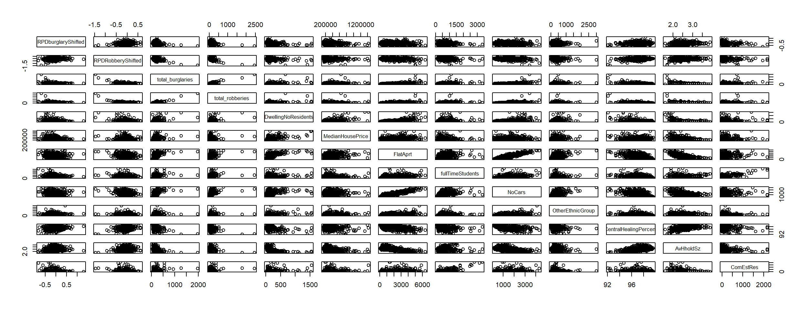
As we hoped, some obvious relationships stand out: for instance, the presence of apartments, and households with no cars, or central heating and average household size.
Our robbery and burglary data and change rates are densely clustered - they’re unlikely to cleanly associate with anything. With that in mind, we’ll perform a log transformation. This cannot be undertaken with negative values, so once again we’ll perform a shift (of 2) for both of our relative error numbers, as well as a commercial resident column, before log transforming our features.
feature_df$BurglaryRPDTranform <- feature_df$RPDburglaryShifted + 2
feature_df$RobberyRPDTranform <- feature_df$RPDRobberyShifted + 2
feature_df$ComEstResTranform <- feature_df$ComEstRes + 2
for (col in colnames(feature_df)){
new_name <- paste("log_", col, sep = "")
feature_df[new_name] <- log(feature_df[col])
}
drop<- c( "log_ComEstRes", "log_RPDburglaryShifted", "log_RPDRobberyShifted")
feature_df<- feature_df[,!(names(feature_df) %in% drop)]
feat_transform_df <- feature_df[,17:29]
orig_feat_df <- feature_df[,0:17]We’ve now separated a separate dataframe where each value has been log transformed - while this isn’t hugely rigorous (and would benefit from inspecting the relationships in more detail) it serves our immediate purpose.
pairs(feat_transform_df)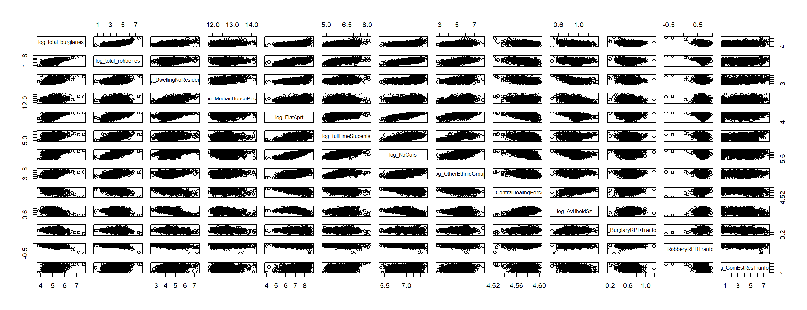
While we’ve introduced a bit of noise, we’ve also “forced” some of our variables into relationships that look semi linear.
To dig into this deeper, let’s create a correlation matrix for our entire transformed dataframe.
correlate(feat_transform_df)Correlation computed with
• Method: 'pearson'
• Missing treated using: 'pairwise.complete.obs'| term | log_total_burglaries | log_total_robberies | log_DwellingNoResidents | log_MedianHousePrice | log_FlatAprt | log_fullTimeStudents | log_NoCars | log_OtherEthnicGroup | log_CentralHealingPercent | log_AvHholdSz | log_BurglaryRPDTranform | log_RobberyRPDTranform | log_ComEstResTranform |
|---|---|---|---|---|---|---|---|---|---|---|---|---|---|
| log_total_burglaries | NA | 0.6793730 | 0.5009180 | 0.2641776 | 0.5386775 | 0.3830059 | 0.5287612 | 0.3864406 | -0.3234183 | -0.3632653 | -0.2224450 | -0.3858625 | 0.2461299 |
| log_total_robberies | 0.6793730 | NA | 0.3528253 | 0.0289555 | 0.6210392 | 0.6262973 | 0.7312742 | 0.5328260 | -0.4392580 | -0.1885684 | -0.1143993 | -0.3860350 | 0.2003534 |
| log_DwellingNoResidents | 0.5009180 | 0.3528253 | NA | 0.5259771 | 0.5455129 | 0.2061306 | 0.4187217 | 0.2388495 | -0.3673864 | -0.6022479 | -0.1801381 | -0.2106489 | 0.2991287 |
| log_MedianHousePrice | 0.2641776 | 0.0289555 | 0.5259771 | NA | 0.2266006 | -0.0590916 | 0.0310431 | 0.1415866 | -0.0743475 | -0.4236094 | -0.1667024 | -0.0843802 | 0.1860743 |
| log_FlatAprt | 0.5386775 | 0.6210392 | 0.5455129 | 0.2266006 | NA | 0.4899513 | 0.8808568 | 0.5041155 | -0.4913225 | -0.5893529 | -0.0645864 | -0.1646088 | 0.2781184 |
| log_fullTimeStudents | 0.3830059 | 0.6262973 | 0.2061306 | -0.0590916 | 0.4899513 | NA | 0.6188377 | 0.6459824 | -0.3243579 | 0.1050335 | -0.0491348 | -0.2206372 | 0.2923494 |
| log_NoCars | 0.5287612 | 0.7312742 | 0.4187217 | 0.0310431 | 0.8808568 | 0.6188377 | NA | 0.5238758 | -0.5402424 | -0.4448476 | -0.0361088 | -0.2002598 | 0.1658930 |
| log_OtherEthnicGroup | 0.3864406 | 0.5328260 | 0.2388495 | 0.1415866 | 0.5041155 | 0.6459824 | 0.5238758 | NA | -0.2366892 | 0.0716831 | -0.0182390 | -0.1700667 | 0.1260174 |
| log_CentralHealingPercent | -0.3234183 | -0.4392580 | -0.3673864 | -0.0743475 | -0.4913225 | -0.3243579 | -0.5402424 | -0.2366892 | NA | 0.4351582 | 0.0943127 | 0.2435584 | -0.1453510 |
| log_AvHholdSz | -0.3632653 | -0.1885684 | -0.6022479 | -0.4236094 | -0.5893529 | 0.1050335 | -0.4448476 | 0.0716831 | 0.4351582 | NA | 0.1430359 | 0.1747301 | -0.2479341 |
| log_BurglaryRPDTranform | -0.2224450 | -0.1143993 | -0.1801381 | -0.1667024 | -0.0645864 | -0.0491348 | -0.0361088 | -0.0182390 | 0.0943127 | 0.1430359 | NA | 0.1726291 | -0.1678558 |
| log_RobberyRPDTranform | -0.3858625 | -0.3860350 | -0.2106489 | -0.0843802 | -0.1646088 | -0.2206372 | -0.2002598 | -0.1700667 | 0.2435584 | 0.1747301 | 0.1726291 | NA | -0.1638404 |
| log_ComEstResTranform | 0.2461299 | 0.2003534 | 0.2991287 | 0.1860743 | 0.2781184 | 0.2923494 | 0.1658930 | 0.1260174 | -0.1453510 | -0.2479341 | -0.1678558 | -0.1638404 | NA |
To provide a visual aid, I’ve extracted the column for our robbery relative change rate, and sorted the table accordingly.
dplyr::select(correlate(feat_transform_df)[order(correlate(feat_transform_df)$log_BurglaryRPDTranform),], term, log_BurglaryRPDTranform)Correlation computed with
• Method: 'pearson'
• Missing treated using: 'pairwise.complete.obs'
Correlation computed with
• Method: 'pearson'
• Missing treated using: 'pairwise.complete.obs'| term | log_BurglaryRPDTranform |
|---|---|
| log_total_burglaries | -0.2224450 |
| log_DwellingNoResidents | -0.1801381 |
| log_ComEstResTranform | -0.1678558 |
| log_MedianHousePrice | -0.1667024 |
| log_total_robberies | -0.1143993 |
| log_FlatAprt | -0.0645864 |
| log_fullTimeStudents | -0.0491348 |
| log_NoCars | -0.0361088 |
| log_OtherEthnicGroup | -0.0182390 |
| log_CentralHealingPercent | 0.0943127 |
| log_AvHholdSz | 0.1430359 |
| log_RobberyRPDTranform | 0.1726291 |
| log_BurglaryRPDTranform | NA |
Regression
Now that we’ve transformed our data, cleaned it up, and identified potential correlates, let’s build our linear model.
There are various automated tools for this process that seek to provide the highest fit and significance, but given the high degree of correlation between my chosen features, I’ve taken a more manual approach and tested a variety of models until I identified one with a suitable fit. The final model is below.
mod_burglary <- lm(log_BurglaryRPDTranform ~ log_total_burglaries + log_FlatAprt + log_MedianHousePrice + log_ComEstResTranform, data = feat_transform_df)
summary(mod_burglary)
Call:
lm(formula = log_BurglaryRPDTranform ~ log_total_burglaries +
log_FlatAprt + log_MedianHousePrice + log_ComEstResTranform,
data = feat_transform_df)
Residuals:
Min 1Q Median 3Q Max
-0.39022 -0.06547 -0.00309 0.05830 0.56322
Coefficients:
Estimate Std. Error t value Pr(>|t|)
(Intercept) 1.255068 0.112681 11.138 < 0.0000000000000002 ***
log_total_burglaries -0.058851 0.009708 -6.062 0.00000000192 ***
log_FlatAprt 0.016153 0.005157 3.132 0.001786 **
log_MedianHousePrice -0.031691 0.009245 -3.428 0.000634 ***
log_ComEstResTranform -0.008125 0.002119 -3.833 0.000135 ***
---
Signif. codes: 0 '***' 0.001 '**' 0.01 '*' 0.05 '.' 0.1 ' ' 1
Residual standard error: 0.1027 on 974 degrees of freedom
Multiple R-squared: 0.08188, Adjusted R-squared: 0.07811
F-statistic: 21.72 on 4 and 974 DF, p-value: < 0.00000000000000022Our model suggests the largest burglary decrease linked to lockdown was in MSOAs which a high level of historic burglary. The composition of housing/accomodation and area type also seems to play a role, with those areas with higher median house prices, and a larger number of commercial residents, seeing stronger decreases, while conversely areas with large number of apartments temper the effect.
While all our variables are significant, the model is not a particularly good fit - the adjusted R2 is around 0.08, suggesting that less than 10% of the variance is accounted for by our model. I suspect more geographic features - such as distance from central London, more accurate footfall, or spatial lags - would probably be useful, but that’s outside the scope of this project.
Let’s perform a similar exercise for robbery.
dplyr::select(correlate(feat_transform_df)[order(correlate(feat_transform_df)$log_RobberyRPDTranform),], term, log_RobberyRPDTranform)Correlation computed with
• Method: 'pearson'
• Missing treated using: 'pairwise.complete.obs'
Correlation computed with
• Method: 'pearson'
• Missing treated using: 'pairwise.complete.obs'| term | log_RobberyRPDTranform |
|---|---|
| log_total_robberies | -0.3860350 |
| log_total_burglaries | -0.3858625 |
| log_fullTimeStudents | -0.2206372 |
| log_DwellingNoResidents | -0.2106489 |
| log_NoCars | -0.2002598 |
| log_OtherEthnicGroup | -0.1700667 |
| log_FlatAprt | -0.1646088 |
| log_ComEstResTranform | -0.1638404 |
| log_MedianHousePrice | -0.0843802 |
| log_BurglaryRPDTranform | 0.1726291 |
| log_AvHholdSz | 0.1747301 |
| log_CentralHealingPercent | 0.2435584 |
| log_RobberyRPDTranform | NA |
mod_burglary <- lm(log_RobberyRPDTranform ~ log_total_robberies + log_total_burglaries + log_FlatAprt + log_CentralHealingPercent + log_fullTimeStudents, data = feat_transform_df)
summary(mod_burglary)
Call:
lm(formula = log_RobberyRPDTranform ~ log_total_robberies + log_total_burglaries +
log_FlatAprt + log_CentralHealingPercent + log_fullTimeStudents,
data = feat_transform_df)
Residuals:
Min 1Q Median 3Q Max
-0.95406 -0.04243 -0.00535 0.04616 0.31826
Coefficients:
Estimate Std. Error t value Pr(>|t|)
(Intercept) -5.041998 1.396500 -3.610 0.000321 ***
log_total_robberies -0.030763 0.005495 -5.598 0.0000000282078 ***
log_total_burglaries -0.066724 0.009757 -6.838 0.0000000000141 ***
log_FlatAprt 0.029516 0.005148 5.733 0.0000000131343 ***
log_CentralHealingPercent 1.302973 0.301809 4.317 0.0000174188038 ***
log_fullTimeStudents -0.001894 0.006809 -0.278 0.780980
---
Signif. codes: 0 '***' 0.001 '**' 0.01 '*' 0.05 '.' 0.1 ' ' 1
Residual standard error: 0.08921 on 973 degrees of freedom
Multiple R-squared: 0.2103, Adjusted R-squared: 0.2062
F-statistic: 51.81 on 5 and 973 DF, p-value: < 0.00000000000000022This is a notably better fit than our burglary model, with our R2 suggesting we now account for over 20% of the variance. The nature of our predictors is also quite different: while we still see a negative relationship with historic crime (with areas of high historic crime experiencing larger relative decreases), there is a positive relationship with both the presence of apartments and central heating.
I suspect some of these features are correlates of deprivation, so I want to create a quick scatter of three - for now we’ll do it against median house price, which is definitely deprivation correlated.
heating <- ggplot(feature_df, aes(x = log_MedianHousePrice, y = log_CentralHealingPercent)) +
geom_point()+
geom_smooth(method=lm)
apartments <- ggplot(feature_df, aes(x = log_MedianHousePrice, y = log_FlatAprt)) +
geom_point()+
geom_smooth(method=lm)
comest <- ggplot(feature_df, aes(x = log_MedianHousePrice, y = log_ComEstResTranform)) +
geom_point()+
geom_smooth(method=lm)
ggarrange(heating, apartments, comest, ncol=3, nrow=1 )`geom_smooth()` using formula 'y ~ x'
`geom_smooth()` using formula 'y ~ x'
`geom_smooth()` using formula 'y ~ x'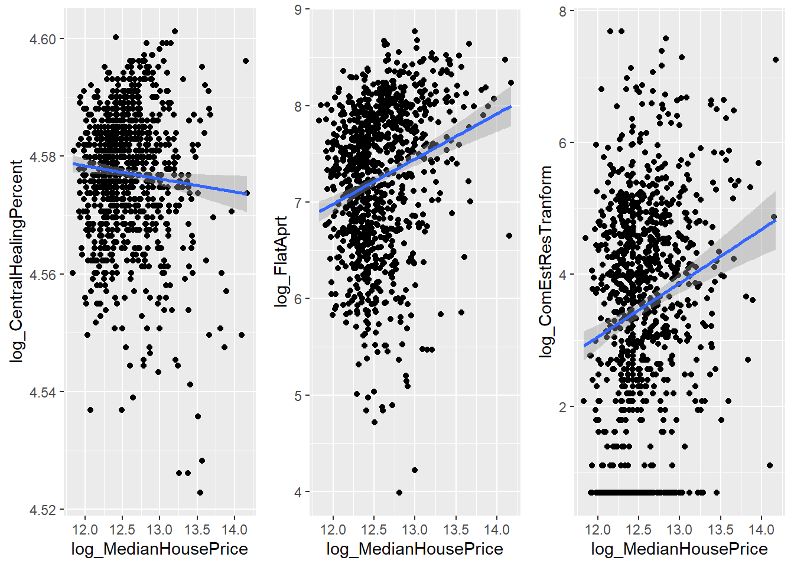
While there does appear to be a relationship with some of these, it isn’t strong - this suggests the factor’s we have identified are significant not because of their association with deprivation and poverty, but because of what they mean about the specific characteristics of the area.
Random Forests
Unlike regression, random forest doesn’t really on any specific type of association - instead, we rely on computing power, repetition and iteration to capture the very best predictor for our variable, in any combination.
There are risks to this method: our sample size is smaller than I’d like, and this may lead to over-fit of outlier MSOAs.
It does mean we don’t need to worry about transformations or correlations: we can return to our original dataset, and let the model identify the strongest predictors.
# we remove rows where our main error is na or missing
rf_msoa_matrix <- drop_na(msoa_matrix_numeric, RPDRobberyShifted)
#then we repeat for any columns where value asre missing
clean_rf_matrix <- rf_msoa_matrix[ , colSums(is.na(rf_msoa_matrix)) == 0]
#then we drop out any values that directly predict our error.
drop<- c("burglaryActual","burglaryError","burglaryPercentError","burglaryPredicted","robberyActual","robberyPredicted","robberyError","robberyPercentError", "RPDBurglaryShifted", "RPDRobberyShifted")
#remove out selected columns
data<- clean_rf_matrix[,!(names(clean_rf_matrix) %in% drop)]
#automatically remove white space and make names r compatbiel
names(clean_rf_matrix)<-make.names(names(clean_rf_matrix),unique = TRUE)
drop<- c("burglaryActual","burglaryError","robberyActual","robberyError","RPDBurglary","RPDRobbery","robberyActualShifted","robberyPredictedShifted","burglaryActualShifted","burglaryPredictedShifted", "burglaryPredicted", "burglaryPercentError", "robberyPredicted", "robberyPercentError")
#drop<- c("burglaryPercentError","burglaryPredicted","robberyPredicted","robberyPercentError")
data<- clean_rf_matrix[,!(names(clean_rf_matrix) %in% drop)]
names(data)<- make.names(names(data),unique = TRUE)
head(data)| UsualRes | HholdRes | ComEstRes | PopDen | Hholds | AvHholdSz | total_robberies | total_burglaries | RPDRobberyShifted | RPDburglaryShifted | Age.Structure..2011.Census..All.Ages | Age.Structure..2011.Census..0.15 | Age.Structure..2011.Census..16.29 | Age.Structure..2011.Census..30.44 | Age.Structure..2011.Census..45.64 | Age.Structure..2011.Census..65. | Age.Structure..2011.Census..Working.age | Mid.year.Estimate.totals.All.Ages.2002 | Mid.year.Estimate.totals.All.Ages.2003 | Mid.year.Estimate.totals.All.Ages.2004 | Mid.year.Estimate.totals.All.Ages.2005 | Mid.year.Estimate.totals.All.Ages.2006 | Mid.year.Estimate.totals.All.Ages.2007 | Mid.year.Estimate.totals.All.Ages.2008 | Mid.year.Estimate.totals.All.Ages.2009 | Mid.year.Estimate.totals.All.Ages.2010 | Mid.year.Estimate.totals.All.Ages.2011 | Mid.year.Estimate.totals.All.Ages.2012 | Mid.year.Estimates.2012..by.age…0.to.14 | Mid.year.Estimates.2012..by.age…15.64 | Mid.year.Estimates.2012..by.age…65. | Mid.year.Estimates.2012..by.age.0.4 | Mid.year.Estimates.2012..by.age.5.9 | Mid.year.Estimates.2012..by.age.10.14 | Mid.year.Estimates.2012..by.age.15.19 | Mid.year.Estimates.2012..by.age.20.24 | Mid.year.Estimates.2012..by.age.25.29 | Mid.year.Estimates.2012..by.age.30.34 | Mid.year.Estimates.2012..by.age.35.39 | Mid.year.Estimates.2012..by.age.40.44 | Mid.year.Estimates.2012..by.age.45.49 | Mid.year.Estimates.2012..by.age.50.54 | Mid.year.Estimates.2012..by.age.55.59 | Mid.year.Estimates.2012..by.age.60.64 | Mid.year.Estimates.2012..by.age.65.69 | Mid.year.Estimates.2012..by.age.70.74 | Mid.year.Estimates.2012..by.age.75.79 | Mid.year.Estimates.2012..by.age.80.84 | Mid.year.Estimates.2012..by.age.85.89 | Mid.year.Estimates.2012..by.age.90. | Households..2011..All.Households | Household.Composition..2011..Numbers.Couple.household.with.dependent.children | Household.Composition..2011..Numbers.Couple.household.without.dependent.children | Household.Composition..2011..Numbers.Lone.parent.household | Household.Composition..2011..Numbers.One.person.household | Household.Composition..2011..Numbers.Other.household.Types | Household.Composition..2011..Percentages.Couple.household.with.dependent.children | Household.Composition..2011..Percentages.Couple.household.without.dependent.children | Household.Composition..2011..Percentages.Lone.parent.household | Household.Composition..2011..Percentages.One.person.household | Household.Composition..2011..Percentages.Other.household.Types | Ethnic.Group..2011.Census..White | Ethnic.Group..2011.Census..Mixed.multiple.ethnic.groups | Ethnic.Group..2011.Census..Asian.Asian.British | Ethnic.Group..2011.Census..Black.African.Caribbean.Black.British | Ethnic.Group..2011.Census..Other.ethnic.group | Ethnic.Group..2011.Census..BAME | Ethnic.Group..2011.Census..White…. | Ethnic.Group..2011.Census..Mixed.multiple.ethnic.groups…. | Ethnic.Group..2011.Census..Asian.Asian.British…. | Ethnic.Group..2011.Census..Black.African.Caribbean.Black.British…. | Ethnic.Group..2011.Census..Other.ethnic.group…. | Ethnic.Group..2011.Census..BAME…. | Country.of.Birth..2011..United.Kingdom | Country.of.Birth..2011..Not.United.Kingdom | Country.of.Birth..2011..United.Kingdom…. | Country.of.Birth..2011..Not.United.Kingdom…. | Household.Language..2011..At.least.one.person.aged.16.and.over.in.household.has.English.as.a.main.language | Household.Language..2011..No.people.in.household.have.English.as.a.main.language | Household.Language..2011….of.people.aged.16.and.over.in.household.have.English.as.a.main.language | Household.Language..2011….of.households.where.no.people.in.household.have.English.as.a.main.language | Religion..2011..Christian | Religion..2011..Buddhist | Religion..2011..Hindu | Religion..2011..Jewish | Religion..2011..Muslim | Religion..2011..Sikh | Religion..2011..Other.religion | Religion..2011..No.religion | Religion..2011..Religion.not.stated | Religion..2011..Christian…. | Religion..2011..Buddhist…. | Religion..2011..Hindu…. | Religion..2011..Jewish…. | Religion..2011..Muslim…. | Religion..2011..Sikh…. | Religion..2011..Other.religion…. | Religion..2011..No.religion…. | Religion..2011..Religion.not.stated…. | Tenure..2011..Owned..Owned.outright | Tenure..2011..Owned..Owned.with.a.mortgage.or.loan | Tenure..2011..Social.rented | Tenure..2011..Private.rented | Tenure..2011..Owned..Owned.outright…. | Tenure..2011..Owned..Owned.with.a.mortgage.or.loan…. | Tenure..2011..Social.rented…. | Tenure..2011..Private.rented…. | Dwelling.type..2011..Household.spaces.with.at.least.one.usual.resident | Dwelling.type..2011..Household.spaces.with.no.usual.residents | Dwelling.type..2011..Whole.house.or.bungalow..Detached | Dwelling.type..2011..Whole.house.or.bungalow..Semi.detached | Dwelling.type..2011..Whole.house.or.bungalow..Terraced..including.end.terrace. | Dwelling.type..2011..Flat..maisonette.or.apartment | Dwelling.type..2011..Household.spaces.with.at.least.one.usual.resident…. | Dwelling.type..2011..Household.spaces.with.no.usual.residents…. | Dwelling.type..2011..Whole.house.or.bungalow..Detached…. | Dwelling.type..2011..Whole.house.or.bungalow..Semi.detached…. | Dwelling.type..2011..Whole.house.or.bungalow..Terraced..including.end.terrace….. | Dwelling.type..2011..Flat..maisonette.or.apartment…. | Land.Area.Hectares | Population.Density.Persons.per.hectare..2012. | House.Prices.Median.House.Price…..2005 | House.Prices.Median.House.Price…..2006 | House.Prices.Median.House.Price…..2007 | House.Prices.Median.House.Price…..2008 | House.Prices.Median.House.Price…..2009 | House.Prices.Median.House.Price…..2010 | House.Prices.Median.House.Price…..2011 | House.Prices.Median.House.Price…..2012 | House.Prices.Median.House.Price…..2013..p. | House.Prices.Sales.2005 | House.Prices.Sales.2006 | House.Prices.Sales.2007 | House.Prices.Sales.2008 | House.Prices.Sales.2009 | House.Prices.Sales.2010 | House.Prices.Sales.2011…129 | House.Prices.Sales.2011…130 | House.Prices.Sales.2013.p. | Qualifications..2011.Census..No.qualifications | Qualifications..2011.Census..Highest.level.of.qualification..Level.1.qualifications | Qualifications..2011.Census..Highest.level.of.qualification..Level.2.qualifications | Qualifications..2011.Census..Highest.level.of.qualification..Apprenticeship | Qualifications..2011.Census..Highest.level.of.qualification..Level.3.qualifications | Qualifications..2011.Census..Highest.level.of.qualification..Level.4.qualifications.and.above | Qualifications..2011.Census..Highest.level.of.qualification..Other.qualifications | Qualifications..2011.Census..Schoolchildren.and.full.time.students..Age.18.and.over | Economic.Activity..2011.Census..Economically.active..Total | Economic.Activity..2011.Census..Economically.active..Unemployed | Economic.Activity..2011.Census..Economically.inactive..Total | Economic.Activity..2011.Census..Economically.active.. | Economic.Activity..2011.Census..Unemployment.Rate | Economic.Activity..2011.Census..Economically.inactive.. | Adults.in.Employment..2011.Census..No.adults.in.employment.in.household..With.dependent.children | Adults.in.Employment..2011.Census….of.households.with.no.adults.in.employment..With.dependent.children | Household.Income.Estimates..2011.12..Total.Mean.Annual.Household.Income…. | Household.Income.Estimates..2011.12..Total.Median.Annual.Household.Income…. | Income.Deprivation..2010….living.in.income.deprived.households.reliant.on.means.tested.benefit | Income.Deprivation..2010….of.people.aged.over.60.who.live.in.pension.credit.households | Lone.Parents..2011.Census..All.lone.parent.housholds.with.dependent.children | Lone.Parents..2011.Census..Lone.parents.not.in.employment | Lone.Parents..2011.Census..Lone.parent.not.in.employment.. | Central.Heating..2011.Census..Households.with.central.heating…. | Health..2011.Census..Day.to.day.activities.limited.a.lot | Health..2011.Census..Day.to.day.activities.limited.a.little | Health..2011.Census..Day.to.day.activities.not.limited | Health..2011.Census..Day.to.day.activities.limited.a.lot…. | Health..2011.Census..Day.to.day.activities.limited.a.little…. | Health..2011.Census..Day.to.day.activities.not.limited…. | Health..2011.Census..Very.good.health | Health..2011.Census..Good.health | Health..2011.Census..Fair.health | Health..2011.Census..Bad.health | Health..2011.Census..Very.bad.health | Health..2011.Census..Very.good.health…. | Health..2011.Census..Good.health…. | Health..2011.Census..Fair.health…. | Health..2011.Census..Bad.health…. | Health..2011.Census..Very.bad.health…. | Low.Birth.Weight.Births..2007.2011..Low.Birth.Weight.Births…. | Low.Birth.Weight.Births..2007.2011..LCL…Lower.confidence.limit | Low.Birth.Weight.Births..2007.2011..UCL…Upper.confidence.limit | Obesity.Percentage.of.the.population.aged.16..with.a.BMI.of.30…modelled.estimate..2006.2008 | Incidence.of.Cancer.All | Incidence.of.Cancer.Breast.Cancer | Life.Expectancy.Males | Life.Expectancy.Females | Car.or.van.availability..2011.Census..No.cars.or.vans.in.household | Car.or.van.availability..2011.Census..1.car.or.van.in.household | Car.or.van.availability..2011.Census..2.cars.or.vans.in.household | Car.or.van.availability..2011.Census..3.cars.or.vans.in.household | Car.or.van.availability..2011.Census..4.or.more.cars.or.vans.in.household | Car.or.van.availability..2011.Census..Sum.of.all.cars.or.vans.in.the.area | Car.or.van.availability..2011.Census..No.cars.or.vans.in.household…. | Car.or.van.availability..2011.Census..1.car.or.van.in.household…. | Car.or.van.availability..2011.Census..2.cars.or.vans.in.household…. | Car.or.van.availability..2011.Census..3.cars.or.vans.in.household…. | Car.or.van.availability..2011.Census..4.or.more.cars.or.vans.in.household…. | Car.or.van.availability..2011.Census..Cars.per.household | Road.Casualties.2010.Fatal | Road.Casualties.2010.Serious | Road.Casualties.2010.Slight | Road.Casualties.2010.2010.Total | Road.Casualties.2011.Fatal | Road.Casualties.2011.Serious | Road.Casualties.2011.Slight | Road.Casualties.2011.2011.Total | Road.Casualties.2012.Fatal | Road.Casualties.2012.Serious | Road.Casualties.2012.Slight | Road.Casualties.2012.2012.Total |
|---|---|---|---|---|---|---|---|---|---|---|---|---|---|---|---|---|---|---|---|---|---|---|---|---|---|---|---|---|---|---|---|---|---|---|---|---|---|---|---|---|---|---|---|---|---|---|---|---|---|---|---|---|---|---|---|---|---|---|---|---|---|---|---|---|---|---|---|---|---|---|---|---|---|---|---|---|---|---|---|---|---|---|---|---|---|---|---|---|---|---|---|---|---|---|---|---|---|---|---|---|---|---|---|---|---|---|---|---|---|---|---|---|---|---|---|---|---|---|---|---|---|---|---|---|---|---|---|---|---|---|---|---|---|---|---|---|---|---|---|---|---|---|---|---|---|---|---|---|---|---|---|---|---|---|---|---|---|---|---|---|---|---|---|---|---|---|---|---|---|---|---|---|---|---|---|---|---|---|---|---|---|---|---|---|---|---|---|---|---|---|---|---|---|---|---|---|---|---|---|---|---|---|---|---|---|---|---|---|---|---|
| 7375 | 7187 | 188 | 25.5 | 4385 | 1.6 | 53 | 58 | 0.0601204 | -0.1219796 | 7375 | 620 | 1665 | 2045 | 2010 | 1035 | 5720 | 7280 | 7115 | 7118 | 7131 | 7254 | 7607 | 7429 | 7472 | 7338 | 7412 | 7604 | 8.771699 | 76.68332 | 14.54498 | 297 | 205 | 165 | 231 | 495 | 949 | 826 | 622 | 663 | 598 | 504 | 470 | 473 | 363 | 263 | 192 | 155 | 86 | 47 | 4385 | 306 | 927 | 153 | 2472 | 527 | 6.978335 | 21.14025 | 3.489168 | 56.37400 | 12.01824 | 5799 | 289 | 940 | 193 | 154 | 1576 | 78.63051 | 3.918644 | 12.745763 | 2.616949 | 2.0881356 | 21.36949 | 4670 | 2705 | 63.32203 | 36.67797 | 3825 | 560 | 87.22919 | 12.770810 | 3344 | 92 | 145 | 166 | 409 | 18 | 28 | 2522 | 651 | 45.3 | 1.2 | 2.0 | 2.3 | 5.5 | 0.2 | 0.4 | 34.2 | 8.8 | 1093 | 762 | 725 | 1573 | 24.9 | 17.4 | 16.5 | 35.9 | 4385 | 1145 | 22 | 12 | 80 | 5416 | 79.3 | 20.7 | 0.4 | 0.2 | 1.4 | 98.0 | 289.78 | 26.24060 | 310000 | 341000 | 412500 | 365000.0 | 410000 | 450000 | 465000 | 485000 | 595000 | 303 | 295 | 268 | 141 | 157 | 235 | 256 | 195 | 353 | 454 | 291 | 445 | 47 | 484 | 4618 | 416 | 422 | 4972 | 187 | 1335 | 78.83304 | 3.761062 | 21.16696 | 38 | 0.9 | 59728.48 | 46788.30 | 5.2 | 9.9 | 91 | 22 | 24.2 | 95.7 | 328 | 520 | 6527 | 4.447458 | 7.050847 | 88.50169 | 4112 | 2374 | 643 | 190 | 56 | 55.75593 | 32.18983 | 8.718644 | 2.576271 | 0.759322 | 4.2 | 2.5 | 7.1 | 13.7 | 76.8 | 90.9 | 83.6 | 88.4 | 3043 | 1100 | 173 | 51 | 18 | 1692 | 69.4 | 25.1 | 3.9 | 1.2 | 0.4 | 0.3858609 | 1 | 39 | 334 | 374 | 0 | 46 | 359 | 405 | 2 | 51 | 361 | 414 |
| 6775 | 6724 | 51 | 31.3 | 2713 | 2.5 | 53 | 136 | -0.0223392 | 0.3489691 | 6775 | 1751 | 1277 | 1388 | 1258 | 1101 | 3923 | 6333 | 6312 | 6329 | 6341 | 6330 | 6323 | 6369 | 6570 | 6636 | 6783 | 6853 | 25.113089 | 58.73340 | 16.15351 | 652 | 607 | 462 | 458 | 399 | 468 | 466 | 466 | 461 | 450 | 347 | 254 | 256 | 254 | 206 | 215 | 201 | 137 | 94 | 2713 | 491 | 366 | 597 | 814 | 445 | 18.098046 | 13.49060 | 22.005160 | 30.00369 | 16.40251 | 4403 | 330 | 820 | 1133 | 89 | 2372 | 64.98893 | 4.870849 | 12.103321 | 16.723247 | 1.3136531 | 35.01107 | 5159 | 1616 | 76.14760 | 23.85240 | 2459 | 254 | 90.63767 | 9.362329 | 3975 | 19 | 174 | 27 | 591 | 122 | 16 | 1417 | 434 | 58.7 | 0.3 | 2.6 | 0.4 | 8.7 | 1.8 | 0.2 | 20.9 | 6.4 | 596 | 663 | 1133 | 269 | 22.0 | 24.4 | 41.8 | 9.9 | 2713 | 82 | 99 | 744 | 865 | 1087 | 97.1 | 2.9 | 3.5 | 26.6 | 30.9 | 38.9 | 216.15 | 31.70483 | 168500 | 180000 | 187500 | 197500.0 | 190000 | 173000 | 185000 | 182250 | 190000 | 81 | 100 | 100 | 68 | 45 | 61 | 51 | 42 | 61 | 1623 | 789 | 706 | 118 | 479 | 914 | 395 | 272 | 2847 | 335 | 1513 | 65.29817 | 11.766772 | 34.70183 | 319 | 11.8 | 31788.19 | 27058.70 | 31.0 | 27.5 | 445 | 249 | 56.0 | 97.5 | 707 | 678 | 5390 | 10.435424 | 10.007380 | 79.55720 | 2933 | 2288 | 1059 | 389 | 106 | 43.29151 | 33.77122 | 15.630996 | 5.741697 | 1.564576 | 10.6 | 8.4 | 13.3 | 29.8 | 100.7 | 93.3 | 78.0 | 80.1 | 1020 | 1186 | 424 | 66 | 17 | 2305 | 37.6 | 43.7 | 15.6 | 2.4 | 0.6 | 0.8496130 | 0 | 0 | 18 | 18 | 0 | 2 | 16 | 18 | 0 | 1 | 15 | 16 |
| 10045 | 10033 | 12 | 46.9 | 3834 | 2.6 | 124 | 239 | 0.0526430 | -0.0218569 | 10045 | 2247 | 1959 | 2300 | 2259 | 1280 | 6518 | 9236 | 9252 | 9155 | 9072 | 9144 | 9227 | 9564 | 9914 | 10042 | 10088 | 10218 | 21.442552 | 65.81523 | 12.74222 | 849 | 739 | 603 | 615 | 686 | 804 | 818 | 743 | 770 | 713 | 624 | 526 | 426 | 372 | 277 | 258 | 198 | 124 | 73 | 3834 | 776 | 730 | 589 | 1039 | 700 | 20.239958 | 19.04017 | 15.362546 | 27.09963 | 18.25769 | 5486 | 433 | 2284 | 1618 | 224 | 4559 | 54.61424 | 4.310602 | 22.737680 | 16.107516 | 2.2299652 | 45.38576 | 7193 | 2852 | 71.60777 | 28.39223 | 3431 | 403 | 89.48878 | 10.511215 | 5475 | 46 | 476 | 42 | 1351 | 430 | 34 | 1514 | 677 | 54.5 | 0.5 | 4.7 | 0.4 | 13.4 | 4.3 | 0.3 | 15.1 | 6.7 | 1028 | 1473 | 446 | 830 | 26.8 | 38.4 | 11.6 | 21.6 | 3834 | 110 | 161 | 936 | 1591 | 1256 | 97.2 | 2.8 | 4.1 | 23.7 | 40.3 | 31.8 | 214.15 | 47.71422 | 185000 | 197750 | 220000 | 225000.0 | 188500 | 215000 | 200000 | 205500 | 237000 | 203 | 232 | 295 | 100 | 80 | 97 | 89 | 114 | 98 | 1778 | 1210 | 1236 | 169 | 847 | 1829 | 729 | 442 | 5038 | 459 | 2111 | 70.47139 | 9.110758 | 29.52861 | 268 | 7.0 | 43356.93 | 36834.53 | 18.9 | 21.2 | 408 | 199 | 48.8 | 96.5 | 792 | 810 | 8443 | 7.884520 | 8.063713 | 84.05177 | 4566 | 3633 | 1325 | 406 | 115 | 45.45545 | 36.16725 | 13.190642 | 4.041812 | 1.144848 | 7.8 | 6.1 | 9.9 | 28.3 | 91.4 | 107.3 | 80.2 | 85.6 | 1196 | 1753 | 691 | 155 | 39 | 3766 | 31.2 | 45.7 | 18.0 | 4.0 | 1.0 | 0.9822640 | 0 | 3 | 34 | 37 | 1 | 4 | 40 | 45 | 0 | 3 | 47 | 50 |
| 6182 | 5937 | 245 | 24.8 | 2318 | 2.6 | 30 | 81 | 0.0257532 | 0.1381492 | 6182 | 1196 | 1277 | 1154 | 1543 | 1012 | 3974 | 6208 | 6159 | 6163 | 6152 | 5997 | 6005 | 6084 | 6268 | 6237 | 6185 | 6308 | 18.246671 | 65.82118 | 15.93215 | 409 | 364 | 378 | 516 | 472 | 435 | 363 | 399 | 388 | 463 | 459 | 354 | 303 | 226 | 238 | 194 | 172 | 106 | 69 | 2318 | 508 | 524 | 322 | 609 | 355 | 21.915444 | 22.60569 | 13.891286 | 26.27265 | 15.31493 | 5006 | 186 | 313 | 649 | 28 | 1176 | 80.97703 | 3.008735 | 5.063086 | 10.498221 | 0.4529279 | 19.02297 | 5292 | 890 | 85.60336 | 14.39664 | 2214 | 104 | 95.51337 | 4.486626 | 4070 | 21 | 34 | 23 | 234 | 10 | 18 | 1373 | 399 | 65.8 | 0.3 | 0.5 | 0.4 | 3.8 | 0.2 | 0.3 | 22.2 | 6.5 | 718 | 969 | 371 | 228 | 31.0 | 41.8 | 16.0 | 9.8 | 2318 | 45 | 92 | 858 | 1094 | 314 | 98.1 | 1.9 | 3.9 | 36.3 | 46.3 | 13.2 | 249.28 | 25.30488 | 181000 | 182000 | 212000 | 208997.5 | 182000 | 192000 | 193750 | 205000 | 210000 | 93 | 131 | 125 | 66 | 54 | 61 | 72 | 58 | 67 | 1502 | 800 | 825 | 163 | 539 | 891 | 266 | 215 | 3187 | 296 | 1251 | 71.81163 | 9.287731 | 28.18837 | 122 | 5.3 | 46701.44 | 39668.21 | 15.8 | 21.3 | 206 | 87 | 42.2 | 98.5 | 586 | 547 | 5049 | 9.479133 | 8.848269 | 81.67260 | 2857 | 2086 | 861 | 302 | 76 | 46.21482 | 33.74313 | 13.927532 | 4.885150 | 1.229376 | 5.8 | 3.9 | 8.6 | 26.9 | 96.1 | 95.5 | 77.9 | 80.7 | 556 | 1085 | 515 | 128 | 34 | 2650 | 24.0 | 46.8 | 22.2 | 5.5 | 1.5 | 1.1432269 | 0 | 1 | 13 | 14 | 0 | 2 | 7 | 9 | 0 | 2 | 5 | 7 |
| 8562 | 8562 | 0 | 72.1 | 3183 | 2.7 | 87 | 161 | -0.1490559 | -0.0107732 | 8562 | 2200 | 1592 | 1995 | 1829 | 946 | 5416 | 7919 | 7922 | 7882 | 7887 | 7917 | 7916 | 8025 | 8317 | 8519 | 8588 | 8660 | 24.237875 | 64.57275 | 11.18938 | 783 | 692 | 624 | 657 | 525 | 608 | 616 | 643 | 673 | 656 | 508 | 386 | 320 | 321 | 202 | 194 | 127 | 90 | 35 | 3183 | 691 | 583 | 593 | 808 | 508 | 21.709080 | 18.31605 | 18.630223 | 25.38486 | 15.95979 | 5674 | 313 | 1050 | 1445 | 80 | 2888 | 66.26956 | 3.655688 | 12.263490 | 16.876898 | 0.9343611 | 33.73044 | 6425 | 2137 | 75.04088 | 24.95912 | 2868 | 315 | 90.10368 | 9.896324 | 4986 | 28 | 138 | 35 | 762 | 166 | 13 | 1816 | 618 | 58.2 | 0.3 | 1.6 | 0.4 | 8.9 | 1.9 | 0.2 | 21.2 | 7.2 | 711 | 1146 | 793 | 482 | 22.3 | 36.0 | 24.9 | 15.1 | 3183 | 89 | 136 | 622 | 2141 | 373 | 97.3 | 2.7 | 4.2 | 19.0 | 65.4 | 11.4 | 118.81 | 72.88949 | 162250 | 170000 | 185000 | 200000.0 | 166250 | 169000 | 165000 | 167000 | 180000 | 152 | 168 | 184 | 73 | 60 | 58 | 81 | 59 | 75 | 1839 | 1026 | 1038 | 160 | 653 | 1119 | 527 | 333 | 4052 | 394 | 1881 | 68.29597 | 9.723593 | 31.70403 | 307 | 9.6 | 34293.82 | 29155.68 | 22.9 | 25.3 | 442 | 231 | 52.3 | 96.3 | 713 | 722 | 7127 | 8.327494 | 8.432609 | 83.23990 | 4089 | 2811 | 1134 | 412 | 116 | 47.75753 | 32.83111 | 13.244569 | 4.811960 | 1.354824 | 7.7 | 6.0 | 9.9 | 29.7 | 110.0 | 106.1 | 76.8 | 79.9 | 1080 | 1423 | 551 | 109 | 20 | 2937 | 33.9 | 44.7 | 17.3 | 3.4 | 0.6 | 0.9227144 | 1 | 5 | 24 | 30 | 0 | 2 | 27 | 29 | 0 | 1 | 24 | 25 |
| 8791 | 8672 | 119 | 50.6 | 3441 | 2.5 | 96 | 136 | 0.0702553 | -0.1401784 | 8791 | 2388 | 1765 | 1867 | 1736 | 1035 | 5368 | 7806 | 7726 | 7771 | 7820 | 7877 | 7974 | 8145 | 8394 | 8571 | 8823 | 9076 | 26.586602 | 62.02071 | 11.39268 | 957 | 792 | 664 | 633 | 642 | 686 | 634 | 651 | 596 | 610 | 483 | 398 | 296 | 242 | 207 | 180 | 181 | 139 | 85 | 3441 | 643 | 489 | 776 | 1064 | 469 | 18.686428 | 14.21099 | 22.551584 | 30.92124 | 13.62976 | 5906 | 307 | 526 | 1997 | 55 | 2885 | 67.18235 | 3.492208 | 5.983392 | 22.716414 | 0.6256399 | 32.81765 | 6658 | 2133 | 75.73655 | 24.26345 | 3117 | 324 | 90.58413 | 9.415867 | 5409 | 22 | 67 | 13 | 577 | 19 | 24 | 2148 | 512 | 61.5 | 0.3 | 0.8 | 0.1 | 6.6 | 0.2 | 0.3 | 24.4 | 5.8 | 558 | 821 | 1663 | 333 | 16.2 | 23.9 | 48.3 | 9.7 | 3441 | 93 | 82 | 761 | 1219 | 1471 | 97.4 | 2.6 | 2.3 | 21.5 | 34.5 | 41.6 | 173.58 | 52.28713 | 165000 | 165000 | 187000 | 199000.0 | 155000 | 165000 | 153750 | 172500 | 168500 | 112 | 133 | 139 | 39 | 40 | 75 | 76 | 48 | 55 | 2057 | 1065 | 1001 | 166 | 556 | 1129 | 429 | 402 | 3905 | 511 | 1893 | 67.35081 | 13.085788 | 32.64919 | 437 | 12.7 | 29975.83 | 25568.60 | 33.3 | 28.9 | 602 | 345 | 57.3 | 98.1 | 828 | 752 | 7211 | 9.418724 | 8.554203 | 82.02707 | 3996 | 3015 | 1252 | 407 | 121 | 45.45558 | 34.29644 | 14.241838 | 4.629735 | 1.376408 | 6.8 | 5.3 | 8.8 | 29.0 | 117.0 | 80.1 | 75.7 | 79.5 | 1496 | 1444 | 419 | 63 | 19 | 2549 | 43.5 | 42.0 | 12.2 | 1.8 | 0.6 | 0.7407730 | 0 | 2 | 18 | 20 | 1 | 1 | 18 | 20 | 0 | 2 | 25 | 27 |
We start with modelling our relative rate of burglary shift. We divide our sample into a training set which we’ll use to train the model, and a test set we’ll use to verify accuracy and validity.
set.seed(123)
sample = sample.split(data$RPDburglaryShifted, SplitRatio = 0.7)
train = subset(data, sample == TRUE)
test = subset(data, sample == FALSE)
rf_burglary <- randomForest(
RPDburglaryShifted ~ .,
data=train,
importance=TRUE
)
summary(rf_burglary) Length Class Mode
call 4 -none- call
type 1 -none- character
predicted 685 -none- numeric
mse 500 -none- numeric
rsq 500 -none- numeric
oob.times 685 -none- numeric
importance 420 -none- numeric
importanceSD 210 -none- numeric
localImportance 0 -none- NULL
proximity 0 -none- NULL
ntree 1 -none- numeric
mtry 1 -none- numeric
forest 11 -none- list
coefs 0 -none- NULL
y 685 -none- numeric
test 0 -none- NULL
inbag 0 -none- NULL
terms 3 terms call #calculate our predictions and a rmse
prediction <-predict(rf_burglary, test)
Metrics::rmse(test$RPDburglaryShifted, prediction)[1] 0.2054765While machine learning models were once considered opaque and difficult to interpret, several libraries now offer functionality to explain predictions. Here I use DALEX to do just this.
rf_explainer_burglary <- DALEX::explain(rf_burglary, data=train, y= train$RPDburglaryShifted)Preparation of a new explainer is initiated
-> model label : randomForest ( default )
-> data : 685 rows 211 cols
-> data : tibble converted into a data.frame
-> target variable : 685 values
-> predict function : yhat.randomForest will be used ( default )
-> predicted values : No value for predict function target column. ( default )
-> model_info : package randomForest , ver. 4.7.1.1 , task regression ( default )
-> predicted values : numerical, min = -0.5274977 , mean = -0.07802522 , max = 0.6606534
-> residual function : difference between y and yhat ( default )
-> residuals : numerical, min = -0.2851655 , mean = -0.001568916 , max = 0.6340126
A new explainer has been created! rf_perf_burg <- model_performance(rf_explainer_burglary)
rf_perf_burgMeasures for: regression
mse : 0.006624875
rmse : 0.08139334
r2 : 0.8398785
mad : 0.04636179
Residuals:
0% 10% 20% 30% 40% 50%
-0.285165546 -0.093485342 -0.059400738 -0.040833227 -0.024804195 -0.007423066
60% 70% 80% 90% 100%
0.009744147 0.032325289 0.054260825 0.089461048 0.634012592 We can see that our model significantly outperforms our best linear models: the R2 suggests that almost 85% of the variance is correctly interpreted, and our rmse (root mean squared error) is around 0.2 on our test set.
This model would be ill-suited to prediction or operationalising -it is a default forecast with no hyper-parameter tuning, and no consideration of error rates - but using tools like DALEX, we can identify which predictors the model identifies as most important.
model_parts_burg <-model_parts(rf_explainer_burglary)plot(model_parts_burg, max_vars=25)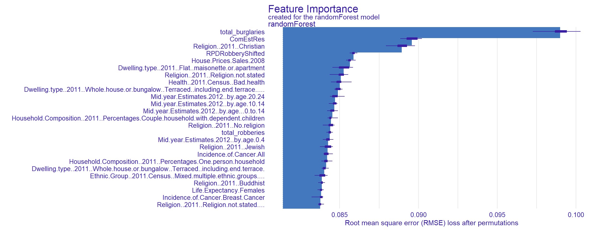
The three most important features our model highlights are: - the age composition of the population - the number of residents which are in commercial property - the historic number of burglaries
This seems to corroborate our previous regression model. To further unpick these trends, we can use Partial Dependence Plots to identify how the model prediction shifts with these values.
pdp_b <- model_profile(rf_explainer_burglary)plot(pdp_b, variables="total_burglaries")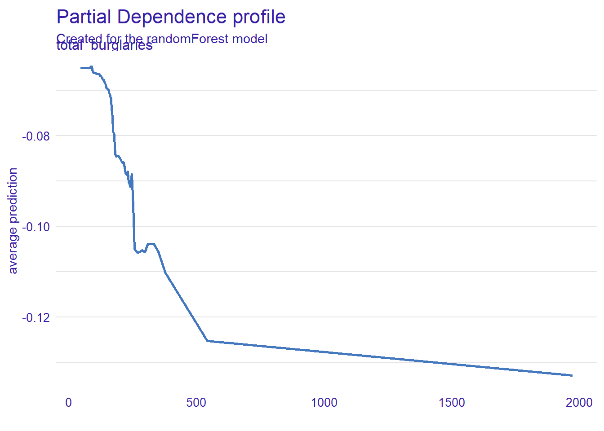
We still see a strong association between a high number of historic, and a large reduction during the lockdown period
plot(pdp_b, variables= "Religion..2011..Christian")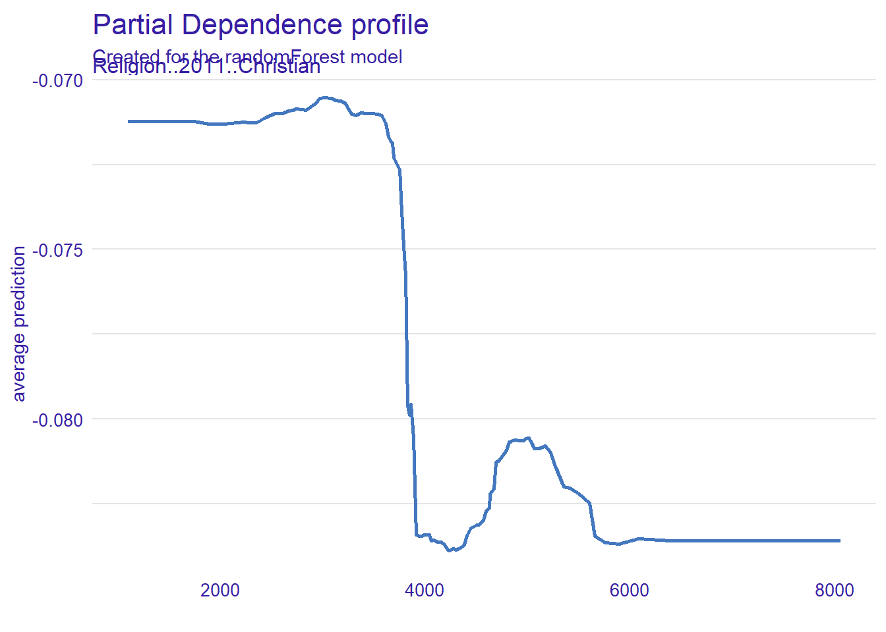
hist(data$Religion..2011..Christian)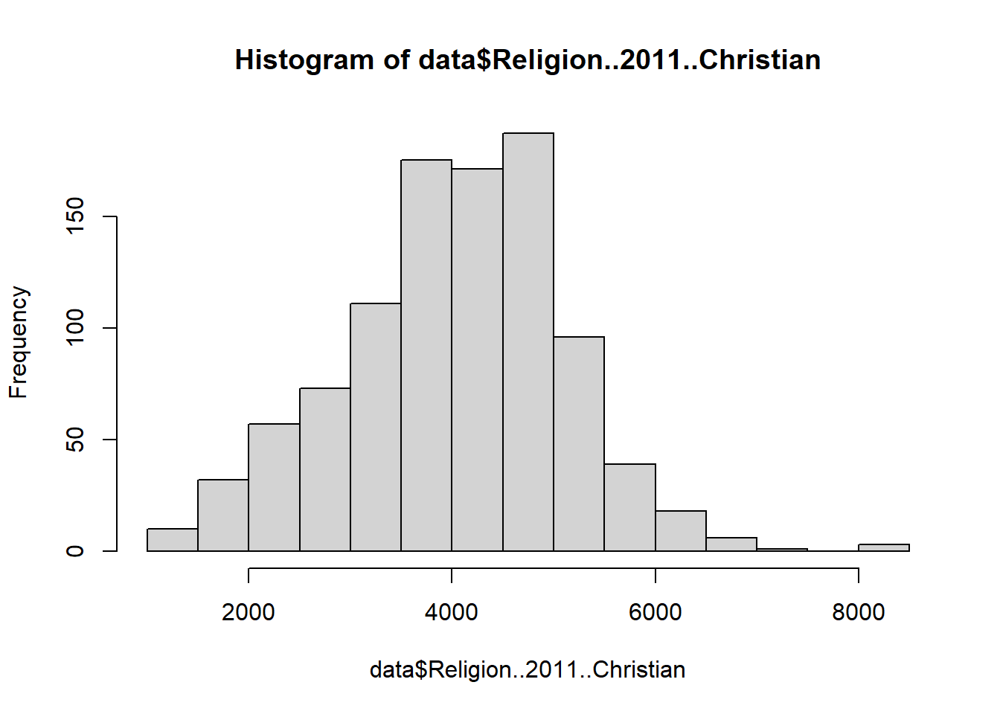
plot(pdp_b, variables="ComEstRes")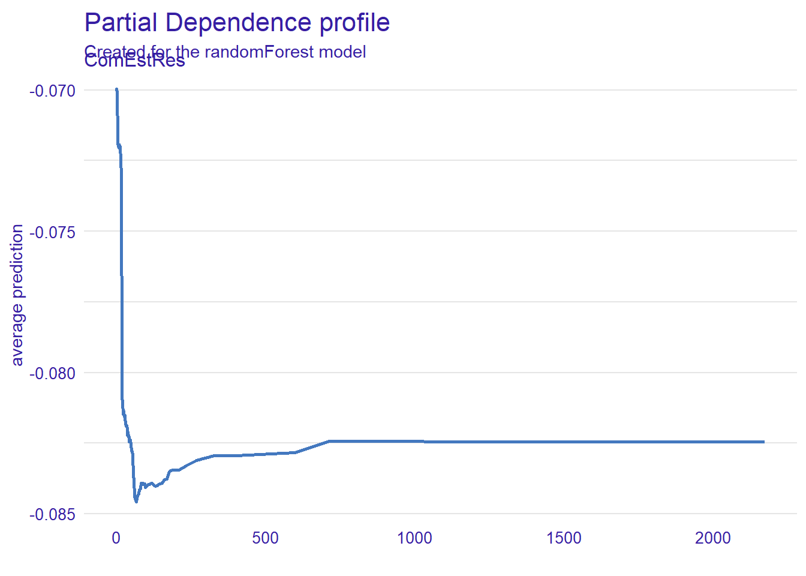
hist(msoa_matrix_numeric$ComEstRes)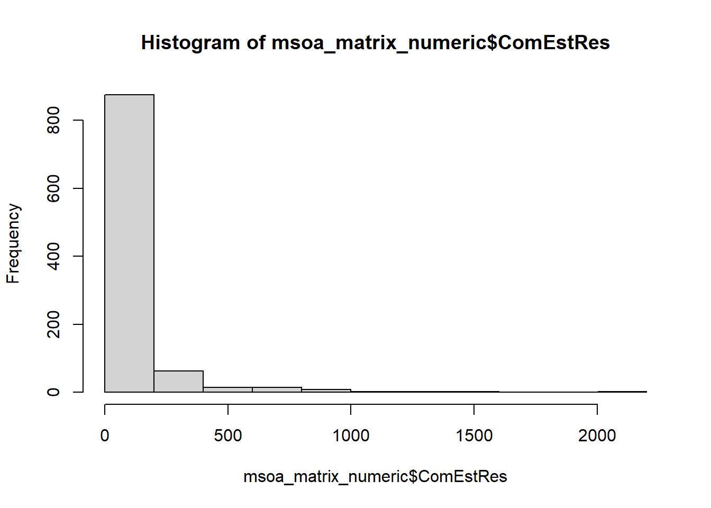
By combining the distribution of commercial residents by MSOA with our PDP, we can see that those MSOAs that are most densely populated by commercial residents see the smallest “covid decrease”(suggesting that those MSOAs that are very heavily residential saw the sharpest drops).
plot(pdp_b, variables="House.Prices.Sales.2008")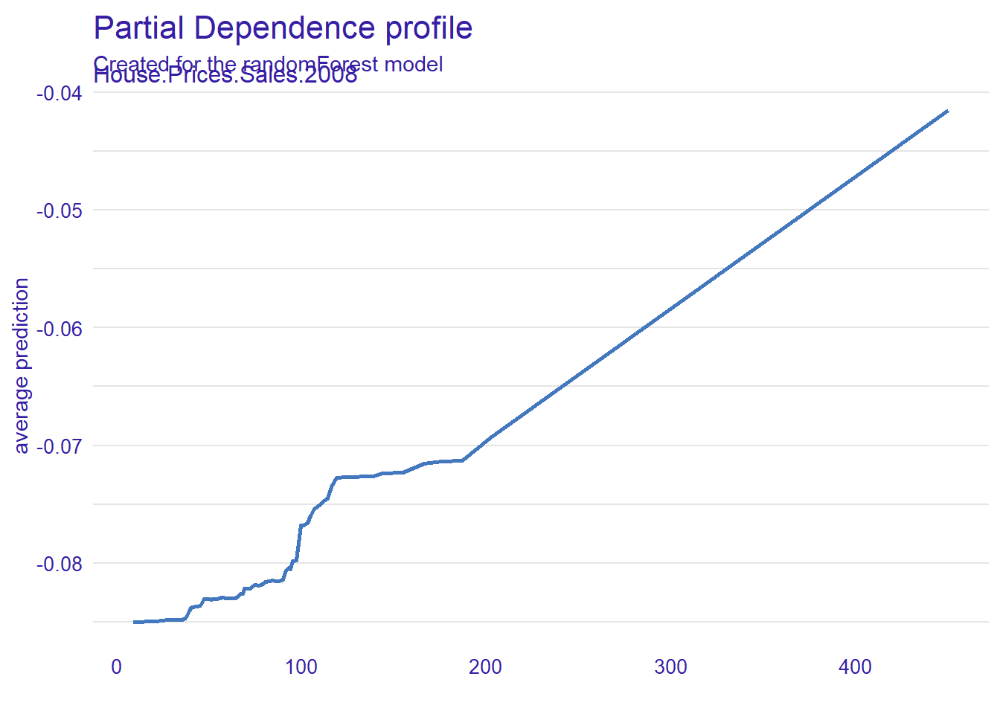
Finally, we can see that those areas that experienced the highest volume of house sales experienced the lowest relative decrease in burglary.
This highlights the importance of identifying correlates in RF models - especially in a dataset where features are highly interlinked, association does not imply causation, and we should be wary of over-interpreting.
We can now repeat our process for our robbery shift.
set.seed(123)
sample = sample.split(data$RPDRobberyShifted, SplitRatio = 0.75)
train = subset(data, sample == TRUE)
test = subset(data, sample == FALSE)
rf_robbery <- randomForest(
RPDRobberyShifted ~ .,
data=train,
importance=TRUE
)
summary(rf_robbery) Length Class Mode
call 4 -none- call
type 1 -none- character
predicted 734 -none- numeric
mse 500 -none- numeric
rsq 500 -none- numeric
oob.times 734 -none- numeric
importance 420 -none- numeric
importanceSD 210 -none- numeric
localImportance 0 -none- NULL
proximity 0 -none- NULL
ntree 1 -none- numeric
mtry 1 -none- numeric
forest 11 -none- list
coefs 0 -none- NULL
y 734 -none- numeric
test 0 -none- NULL
inbag 0 -none- NULL
terms 3 terms call We’ve now trained a model. Let’s now use the DALEX library to understand it, and see how it performs.
rf_explainer_robbery <- DALEX::explain(rf_robbery, data=train, y= train$RPDRobberyShifted)Preparation of a new explainer is initiated
-> model label : randomForest ( default )
-> data : 734 rows 211 cols
-> data : tibble converted into a data.frame
-> target variable : 734 values
-> predict function : yhat.randomForest will be used ( default )
-> predicted values : No value for predict function target column. ( default )
-> model_info : package randomForest , ver. 4.7.1.1 , task regression ( default )
-> predicted values : numerical, min = -0.9908618 , mean = -0.04880848 , max = 0.3886733
-> residual function : difference between y and yhat ( default )
-> residuals : numerical, min = -0.4640489 , mean = -0.0007951117 , max = 0.2909289
A new explainer has been created! rf_perf_rob <- model_performance(rf_explainer_robbery)
rf_perf_robMeasures for: regression
mse : 0.003630323
rmse : 0.06025216
r2 : 0.872715
mad : 0.02818358
Residuals:
0% 10% 20% 30% 40% 50%
-0.464048863 -0.059133188 -0.037257312 -0.023376075 -0.014244755 -0.004866538
60% 70% 80% 90% 100%
0.005089387 0.019736886 0.034999616 0.059437002 0.290928866 model_parts_rob <-model_parts(rf_explainer_robbery)plot(model_parts_rob, max_vars=25)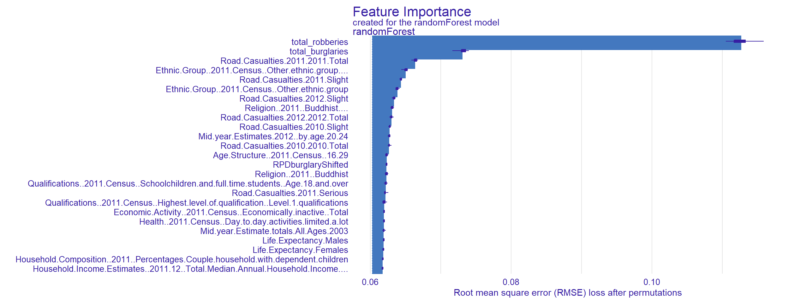
pdp_rob <- model_profile(rf_explainer_robbery)plot(pdp_rob, variables="total_robberies")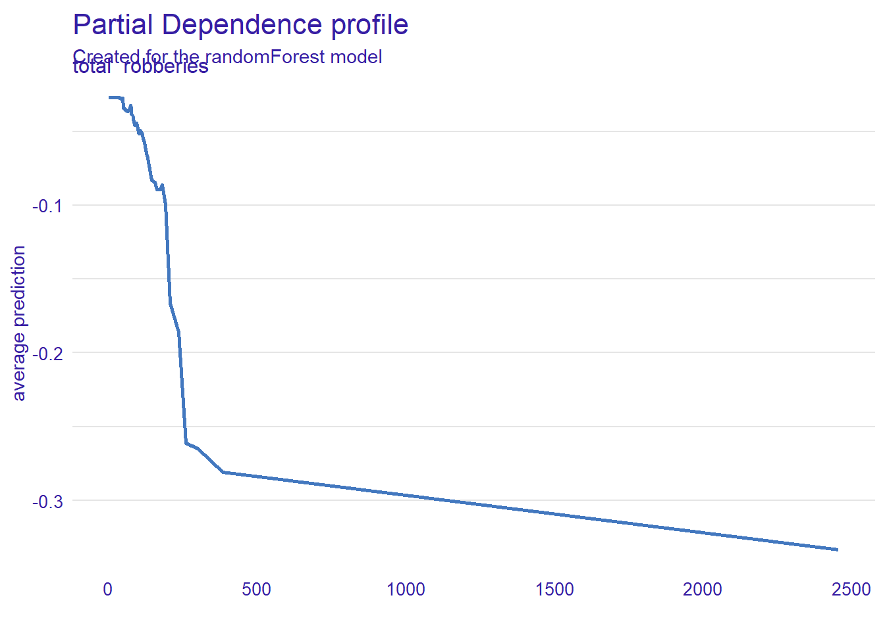
plot(pdp_rob, variables="total_burglaries")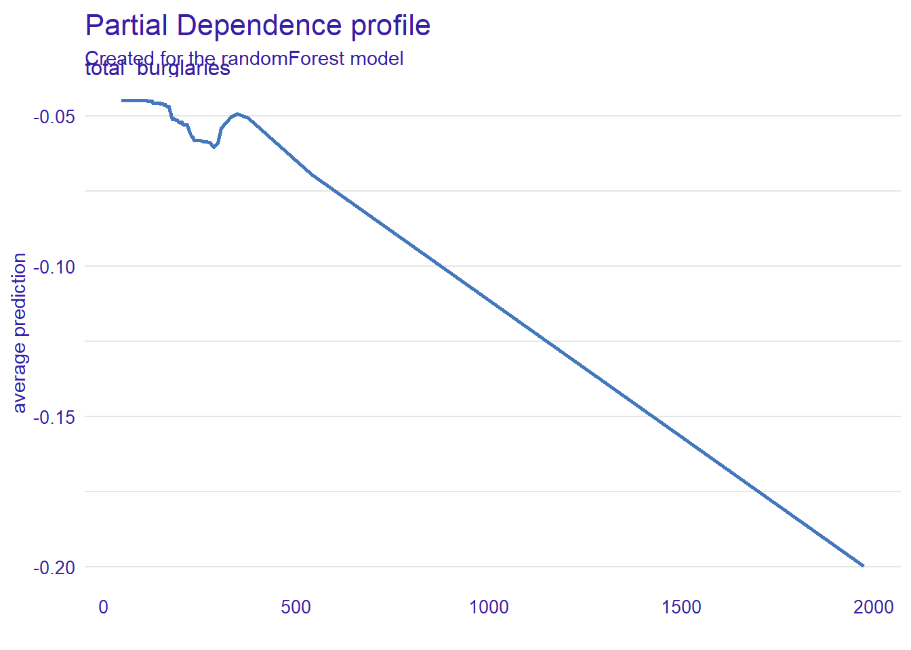
The effect of historic crime effects again appears like a reliable predictor of a robbery covid shift: those MSOAs with the highest number of burglaries and robberies see strong decreases in robbery (though the association with burglary is not clear cut, suggesting other interaction effects may be driving this)
plot(pdp_rob, variables="Road.Casualties.2011.2011.Total")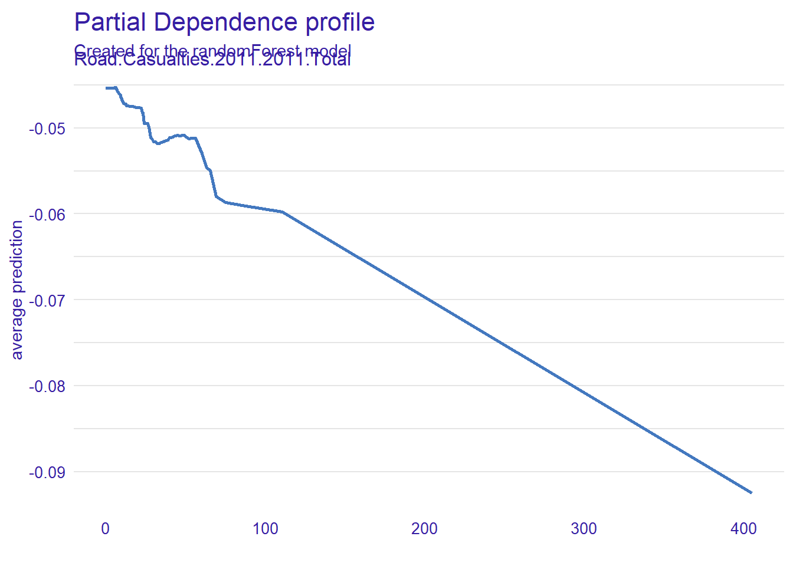
Road casualties is another strong relationship. This could be a proxy for deprivation, but I suggest this is more down to geographic features - road casualties are probably rarer in denser urban environments, most likely to be affected by lockdown.
plot(pdp_rob, variables="Ethnic.Group..2011.Census..Other.ethnic.group....")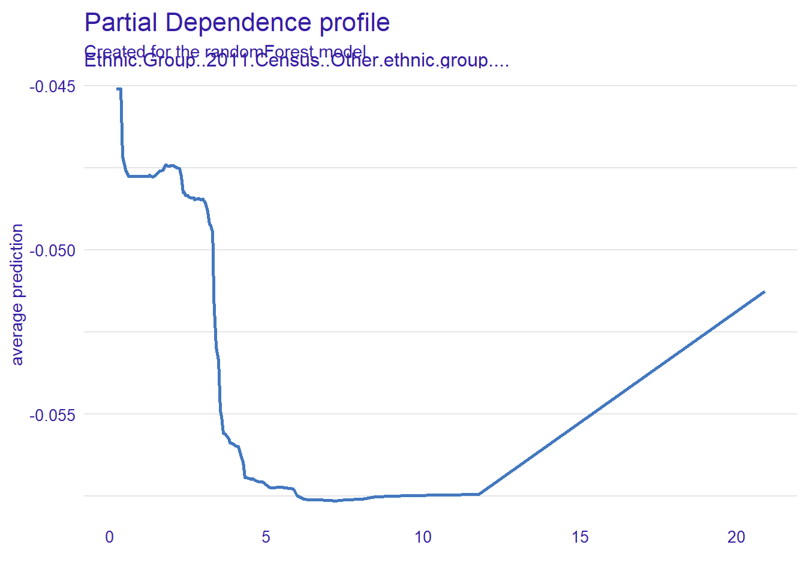
hist(data$Ethnic.Group..2011.Census..Other.ethnic.group....)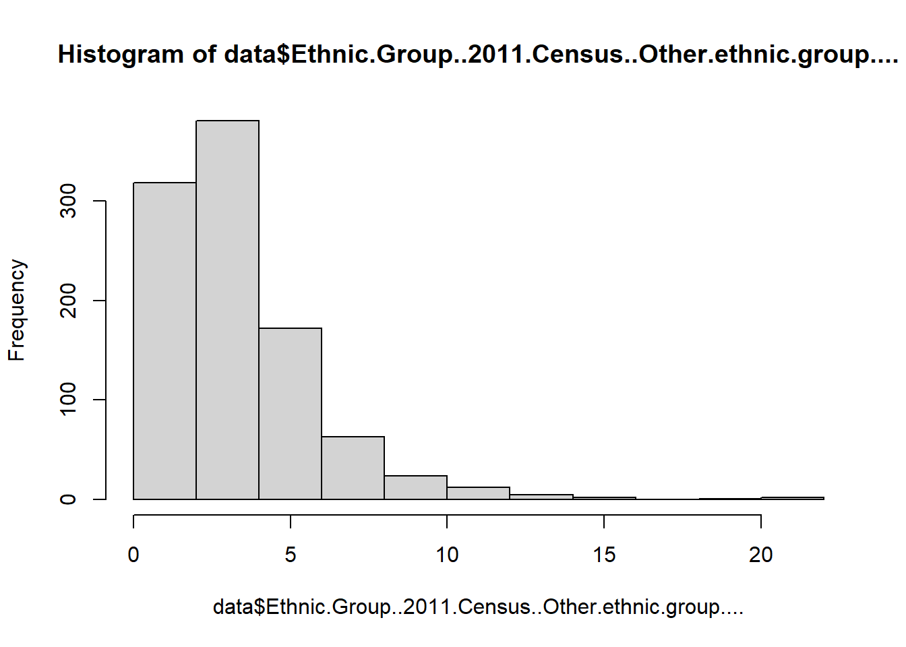
Finally, we see a demographic predictor linked to “other ethnic group”. I’m not clear how to interpret this, but it suggests that those MSOAs that are most diverse (and have the largest representation by these ethnic groups) experienced the strongest decreases in robbery during lockdown.
Together, these analyses suggest that the crime drop for robbery and burglary during national lockdown was significantly affected by distinct local factors. For both offences, historical crime trends play a role, with high crime areas experiencing a relatively larger drop in both burglary and robbery.
Beyond that, the drivers vary for each offence type: burglary was driven by the composition of the residential population, with heavily residential areas, and areas with a relatively “stable” population as measured by low housing sales also saw larger decrease - this is likely due to the increased number of empty residential properties.
Robbery decreases conversely, are well associated with high numbers of road casualties, as well as the ethnic makeup of the local population - this is likely due to an association with denser, more urban areas, with lower street speeds, and a possible link to deprivation, whereby minority population were least able to work from home, and were likely to still present as available targets for robbery.